L'affaire de l'Argentaurum UN ÉPISODE DE L'HISTOIRE DE L'ALCHIMIE EN LORRAINE
August Strindberg et l'alchimie
Clovis Hesteau de Nuysement à l'hôtel des Fermes, Ligny-En-Barrois
revu le 18 octobre 2003Plan : Introduction. I. Un épisode alchimique en Lorraine avec 42 notes de R. de Souhesmes - II. l'affaire de l'argentaurum [position du problème : allotropie et isomérie - hypothèse de J.B. Dumas : la matière unique - l'argentaurum : analogie de sa préparation avec les procédés décrits dans les textes : procédé Tiffereau - procédé Jollivet-Castellot - procédé Carey Lea {pierre infernale - sel de Seignette - eau forte - vitriol vert} ]- III. Un article sur l'argentaurum par Paul Bary avec les pseudo publications de Tiffereau aux C.R. de l'Académie des Sciences - IV. August Strindberg et l'alchimie [introduction - théories de M. Strindberg - fabrication de l'or... - notices sur l'or... - Synthèse de l'or : point de départ - expérience fondamentale - Expérience II - Expérience III pour le rendement en gros] - sites internet sur Strindberg et l'alchimie - V. Clovis Hesteau de Nuisement -
Cette section se compose de cinq parties qui, peu ou prou, ont à voir avec les rapports entre l'alchimie et l'Alsace-Lorraine. C'est ainsi que nous avons développé le chapitre V autour du poète alchimique Clovis Hesteau de Nuysement [Nuisement], relativement au château qu'il habita pendant un temps à Ligny-En-Barrois. De même, l'Argentaurum nous a amené à procéder à quelques développements concernant Tiffereau et donc Jollivet-Castellot, ce qui nous a conduit à inclure les lignes qu'on lira sur les rapports - assez extraordinaires il faut bien le dire - entre August Strindberg et l'alchimie. Quant à l'épisode alchimique en Lorraine, voilà un texte qui a paru dans un recueil d'une société savante de Lorraine : les Mémoires de l'Académie de Stanislas, en 1899 [5ème série, tome 16]. On doit au serveur Gallica la numérisation des archives de Lorraine et d'Aquitaine qui permettent d'accéder à des documents restés jusque là inexploités. Ce texte a été pour nous l'amorce d'une réflexion sur ce qui constitue peut-être une hypothèse alternative rationnelle à celle que nous avons proposé ailleurs sur ce site : la préparation des pierres gemmes. Entendons-nous bien. Il ne s'agit absolument pas de prétendre expliquer tout le processus alchimique de cette manière. Mais on ne eput nier que certains alchimistes, à force d'essais, d'application, de pugnacité, de persévérance enfin, ont pu obtenir des petites masses jaunes à partir du traitement approprié de l'argent qui ait pu leur faire croire qu'ils étaient parvenus au but : transmuter de l'argent en or. Répétons-le : les circonstances de préparation de cette forme particulière d'argent est hautement improbable et fait que, sans doute, pas 1 artiste sur 100 ne devait obtenir plus que des traces jaunes dans leur argent qui leur assuraient que, peut-être, ils étaient sur la bonne voie, le bon chemin, le bon sentier comme aurait dit Flamel...Cela ne constitue d'autre qu'une hypothèse alternative de « rattrapage » qui ne saurait modifier intrinsèquement tout ce que nous avons déjà fait voir, en toute conjecture d'ailleurs. Pour l'ensemble des hypothèses retenues comme rationnlles, voyez la section voie humide. Il est clair que l'argentaurum fait partie de ces matières qui sont dans la mouvance de notre section sur l'Idée alchimique et c'est pourquoi, pris en tant que rêve ultime des alchimiste et situé aux confins du rationnel, nous avons souhaité en faire la 4ème partie de ce chapitre.
¯
Tout d'abord, quelques mots sur l'auteur de cette épisode inédit de l'histoire de l'alchimie en Lorraine.
DISCOURS PRONONCÉ le 24 février 1902 AUX OBSÈQUES DE M. RAYMOND DE SOUHESMESCe texte propose un épisode qui nous en rappelle bien d'autres et que nous avons vu en étudiant les biographies d'Alexandre Sethon, de Michel Sendivogius, du pseudo Basile Valentin, du Bon Trévisan, de Denis Zachaire, etc. Dans ces textes, il est relaté quantité d'opérations menées en vain, de résultats supposés qui se dérobent comme le Mercure, qui partent en fumée et qui laissent les protagonistes en prison ou en fuite...Nous avons vu, cependant, que les transmutations de Sethon semblent poser un problème car on n'a pas pu y déceler jusqu'à présent des supercheries, au point que Louis Figuier [l'Alchimie et les Alchimistes, Hachette, 1860] se trouvait bien en peine et avait proposé des explications encore plus alambiquées que les textes hermétiques les plus abscons...Le texte de Souhesmes date d'une époque où l'on ne savait pas encore réellement - dans le public cultivé - si les corps simples connus sous le nom des métaux, l'étaient réellement. D'où cette théorie de l'argentaurum qui, par la suite, s'est révélée être fausse. Souhesmes, toutefois, est tout à fait impartial et ne doute pas de la sincérité et de la bonne fois de la plupart des Artistes. Il cite d'ailleurs Berthelot [Origines de l'alchimie] dont la dernière phrase de son livre suspend l'interprétation et laisse supposer que peut-être...
MEMBRE TITULAIREPAR M. HENRI MENGIN
MESSIEURS,
La mort épuise sur l'Académie de Stanislas ses rigueurs et ses caprices. Elle vous prend aujourd'hui un confrère dans la force de l'âge, dont vous pouviez vous promettre de goûter longtemps l'agréable fréquentation et la collaboration précieuse. Il y a quelques semaines, M. Raymond de Souhesmes était encore parmi nous, donnant par son énergie et son assiduité a nos séances l'illusion sur les premières apparences du mal qui, avec une foudroyante rapidité, allait défier les efforts de la science. Sans s'abuser sur la gravité de son état, votre confrère a stoïquement enduré ses souffrances, supporté sans découragement l'affaiblissement de ses forces ; il a, un jour, rassemblé leurs restes pour corriger les épreuves de sa dernière œuvre et se décider à une tentative suprême de la chirurgie ; puis il a vu venir la mort avec la sérénité de l'homme de bien et la résignation du chrétien, conservant en face d'elle pour les parents aimés et les amis fidèles qui l'entouraient, pour ceux qui lui prodiguaient leurs soins dévoués, l'aimable sourire où s'exprimaient les charmes de son aménité et les délicatesses de sa courtoisie.
Aux tristesses de ce nouvel adieu que vos deuils répétés m'imposent la tâche douloureuse de dire au nom de la Compagnie, se mêlent, pardonnez-moi de n'en pas retenir l'aveu, les émotions d'une amitié personnelle cruellement éprouvée. Le lettré élégant, à qui m'unissait depuis quelques années l'honneur de la confraternité académique, avait été mon camarade à la Faculté de droit de Nancy, et nous étions entrés au Barreau ensemble, à l'époque où ses traditions de famille le destinaient à garder à la Magistrature un nom entouré d'estime et de respect.
Quand les événements l'amenèrent a renoncer à ce projet, Raymond de Souhesmes entreprit sans hésitation d'appliquer à un autre emploi, utile aussi et élevé, sonamour du travail et les facultés de son intelligence et de son esprit. Et c'est ainsi, qu'en lui ouvrant vos rangs au titre d'associé correspondant en 1892, et en l'élisant membre titulaire en 1896, vous vous attachiez un archéologue savant et un écrivain distingué et séduisant.
L'oeuvre considérable de M. de Souhesmes se partage en deux branches absolument distinctes : travaux historiques et archéologiques, d'une part; relations de voyages, d'autre part ; mais malgré son étendue et son extrême variété, elle se rassemble sous la vigoureuse empreinte des qualités originales de son auteur. Les éludes instructives, les réflexions de l'observateur sagace, y sont revêtues d'une forme souple et animée ; la verve s'y rencontre avec la raison, l'imagination avec le jugement et le goût, l'exactitude et la précision avec la facilité et la couleur, et l'érudition s'y plaît, sans dommage, à des allures spirituelles et enjouées.
Chercheur de trésors et d'antiquités dans les bibliothèques et les archives, d'aventures et de nouveautés dans des explorations lointaines, M. de Souhesmes rapportait avec le même souci les notes d'une visite aux manuscrits et aux cartons poudreux, d'un voyage en Norvège ou en Ecosse, à Samarkande ou à Bakou, en Dalmatie ou au Caucase. Et de cette matière recueillie avec pénétration et patience, sa critique judicieuse, son récitconsciencieux et vivant, composaient des pages pleines de lumière et de relief, que le crayon de l'artiste, secondant au besoin la plume de l'écrivain, enrichissait à l'occasion de quelque intéressant dessin.
Dés heures charmantes qu'à plusieurs reprises votre confrère vous a fait passer en vous offrant la primeur de quelques-unes de ses relations de voyages, n'avez-vous pas, Messieurs, gardé l'impression de la sincérité et de la belle humeur de ce touriste convaincu que ne rebutaient ni les fatigues de la route, ni les morsures du froid,ni les ardeurs du soleil, ni les déceptions accidentelles, d'une bonne grâce si complaisamment familière, qu'à sa description des pays traversés, au récit animé des épisodes qui sont l'action et l'âme d'un voyage, il semblait vous conduire avec lui, dans la société du plus gracieux compagnon et du plus intéressant des guides ?
L'archéologie et l'histoire, même dans ce qu'elles ont de rigoureusement scientifique, n'ont pas résisté à la contagion de ces qualités aimables, dont l'agrément se retrouve dans les travaux nombreux que M. de Souhesmes leur a consacrés. Son style simple et clair, son ordonnance logique, son raisonnement limpide, donnent à leur lecture un véritable attrait. Et si ses découvertes ou sa perspicacité le conduisent à réfuter une opinion admise ou à rectifier l'erreur d'un devancier, il le fait avec les égards et la réserve que lui inspire son attentive urbanité.
A ces études austères, M. de Souhesmes n'a pas apporté seulement sa puissance de travail, mais aussi les délicatesses de son cœur. Dans un sentiment pieux il les a commencées par un opuscule, utile à l'histoire générale, sur l'organisation politique, administrative, ecclésiastique et féodale d'un village de la Meuse dont il portait le nom et qui fut le berceau de sa famille. C'est dans une pensée pareillement affectueuse, qu'attaché étroitement à Nancy, il a dressé à deux reprises le catalogue des curiosités archéologiques de la ville et de sa banlieue, ajoutant à une nomenclature sans lacunes et à des classifications soigneuses, l'intérêt de commentaires savants, et pouvant exprimer avec autorité le vœu que, instruits de la valeur des œuvres d'art qu'ils possèdent, les propriétaires les traitent enfin avec le respect qu'elles méritent.
Frappé du retard de l'étude de la vie privée des Lorrains sur la connaissance des faits généraux de l'histoire de leur pays du XVe au XVIIe siècles, M. de Souhesmes venait de l'aborder dans un de ses éléments, la criminalité, et, du relevé des lettres de rémission octroyées par les ducs de Lorraine, il avait dégagé la reconstitution d'une époque, avec ses mœurs, ses personnages, leurs pittoresques dialogues, les particularités de leur existence, saisies sur le vif et contées en curieuses anecdotes.
La mort a fermé de son geste brutal la dernière page de ce premier chapitre d'une histoire complète du tempérament lorrain, d'après les documents authentiques. Les œuvres mêmes qu'elle a interrompues m'ont permis, Messieurs, de découvrir déjà par quelques côtés le caractère du confrère dont vous déplorez la perte, et de lui rendreun légitime hommage. Il serait incomplet si j'oubliais une passion entre toutes élevée et respectable, qui s'est partagé avec celle de l'étude sa vie laborieuse. M. de Souhesmes n'avait pas vingt ans, quand les premiers revers de nos armes l'enfermèrent dans Metz avec sa famille : il y contracta immédiatement un engagement
volontaire dans la compagnie des francs-tireurs de Metz employée aux avant-postes où il fit apprécier un dévoùment ardent et généreux. De ces jours d'épreuve il avait gardé à l'armée un attachement intime, et, dans cette nature loyale et résolue, ce sentiment s'était traduit par des actes ; officier d'artillerie de réserve, puis capitaine de l'armée territoriale et attaché à l'état-major, il se donnait au service dans toutes les occasions, gagnant ses grades par son zèle et par son instruction. Il y a deux ans, la croix de chevalier de la Légion d'honneur avait récompensé ses mérites, et nous avions salué cette juste distinction, heureux de nous associer au témoignage rendu aux vertus militaires en la personne d'un des nôtres.
N'était-ce pas d'ailleurs, Messieurs, une satisfaction particulièrement douce, que celle de partager les joies de ce confrère sympathique et délicat, de répondre à la sûreté, au tact exquis et à la prévenance qu'il apportait à des relations dont le prix s'ajoutait à l'estime que nous avions pour son talent et pour ses travaux ? Il semble qu'appliqué par sa vocation et ses études à restituer dans le cadre exact de sa vie, de ses institutions, de son art el de ses mœurs notre ancienne société, il ait
été destiné par ses qualités personnelles à en perpétuer les traditions courtoises et distinguées, le patriotisme et l'amour du sol natal, le goût des lettres el des armes.Trop court au gré de nos affections et pour l'intérêt de nos travaux, votre passage à l'Académie lui laissera, mon cher de Souhesmes, une impression ineffaçable, et dans nos souvenirs voilés de mélancolie se mêleront les regrets de votre collaboration prématurément perdue, et la pensée des charmes de votre caractère et de votreesprit.
I. UN ÉPISODE DE L'HISTOIRE DE L'ALCHIMIE EN LORRAINE
La recherche du l'or est à l'ordre du jour : des sables brûlants du Transvaal aux sommets glacés de l'Alaska, la fièvre de l'or sévit aussi violente, aussi crurelle que jamais. On vient, paraît-il, de découvrir un procédé pour dépouiller l'eau de mer de l'infime quantité d'or qu'elle tient en dissolution1 ; un chimiste américain, le Dr Emmens, prétend transformer l'argent en un métal nouveau, l'argentaurum, qui offrirait tous les caractères du précieux métal2; on le cherche enfin jusque dans les vieux écus que la Monnaie fait refondre pour recueillir la quantité infinitésimale d'or qui y est contenue. La science moderne reprend, avec les nouveaux agents dont elle dispose, l'étude du grand problème qui passionne le monde depuis quinze siècles, et le « grand œuvre » des philosophes hermétiques devient presque une question d'actualité.
Il n'est donc pas inopportun de faire connaître l'existence d'un laboratoire alchimique qui fonctionna au château de Condé, à deux lieues de Nancy, de 1609 à 1613. Si les documents contenus dans le Trésor des Chartes ne lèvent pas complètement le voile qui cache encore la fin mystérieuse des alchimistes lorrains, ils nous permettent cependant d'entrevoir leur méthode et jettent un peu de lumière sur une question historique demeurée malgré tout fort obscure.
Science occulte, l'alchimie est demeurée telle dans l'histoire. Son objet, personne ne l'ignore, était la transmutation des métaux. Changer les métaux vils en métaux nobles, faire de l'or ou de l'argent par des procédés artificiels, tel était le but de cette doyenne de toutes les sciences. Sans aller jusqu'à prétendre, comme les adeptes du XVIIIe siècle, que l'alchimie était déjà connue avant le déluge, on peut admettre que les pratiques métallurgiques et les premières idées de transmutation se perdent dans une antiquité probablement fort reculée. Venues d'Egypte et de Chaldée, berceau de toute science humaine, ces traditions étaient connues des Romains, et Pline l'Ancien rapporte3 que Caligula fit calciner une quantité considérable d'orpiment4 pour en tirer de l'or; il réussit, mais le rendement fut si minime, que la quantité d'or obtenue ne paya pas les frais de l'opération. C'est la première tentative de préparation artificielle de l'or que l'histoire nous ait transmise. Vers le IVe siècle, les Grecs d'Egypte apportèrent l'alchimie à Constantinople; les Arabes, de leur côté, la transportèrent en Espagne, d'oùelle gagna l'Occident. Malgré les condamnations dont elle fut l'objet, la science hermétique grandit, au XIIIe et au XIVe siècle, avec Raymond Lulle, Roger Bacon et Nicolas Flamel. Au XVe siècle, le roi d'Angleterre, Henri VI, frappait de la fausse monnaie avec de l'or alchimique; enfin, au XVIIIe siècle, le « grand œuvre » atteignit son apogée avant de tomber dans le charlatanisme5. Les alchimistes arabes considéraient les métaux comme des corps uniformément composés de soufre et de mercure : le mercure représentant la métalléité et le soufrel'élément combustible. Les métaux ne différaient, suivant eux, que par les proportions et le degré de pureté de ces éléments. Plus un métal était inaltérable, plus il était noble; l'or était le roi des métaux, et ceux-ci tendaient à devenir de l'or, sous l'action des astres. En conséquence, les alchimistes de Byzance, a l'exemple des Babyloniens, avalent donné aux métaux les noms des planètes qui, suivant eux, les engendraient : l'or était consacré au soleil, l'argent à la lune, le cuivre à Vénus, le plomb à Saturne, etc. Quant au mercure, matière première du « grand œuvre », il était naturellement réservé à Hermès.
L'action des astres sur les métaux était lente, aussi la grande préoccupation des alchimistes fut-elle de découvrir la substance merveilleuse, capable, croyait-on, de réaliser immédiatement la transmutation. La « pierre philosophale » ou « grand magistère » a été souvent décrite par les adeptes qui prétendaient l'avoir observée ; non seulement elle passait pour transformer en or les métaux vulgaires, mais elle assurait la santé et prolongeait l'existence.
Les Arabes avaient su maintenir l'alchimie dans l'étude des faits, le Moyen Âge, revenant aux superstitions de l'antique Egypte, introduisit dans les recherches l'inspiration religieuse, et les pratiques mystérieuses dont les adeptes entouraient leurs travaux, jointes aux supercheries des charlatans, augmentèrent encore la croyance du vulgaire à une intervention des puissances occultes. Comme l'Antiquité, le Moyen Âge associa l'alchimie avec la magie et on sait combien cette époque, si féconde à d'autres points de vue, est demeurée stérile dans l'ordre scientifique. Cependant, en présence des résultats obtenus, les alchimistes eux-mêmes pouvaient croire, de bonne foi, à la réussite de leurs opérations; l'analyse des alliages précieux était tellement imparfaite, à cette époque, que même au XVIe siècle, lorsque, dans les hôtels monétaires, l'eau-forte remplaça le sulfure d'antimoine pour l'essayage des métaux, on dut prendre souvent pour de l'or pur des alliages où le précieux métal était en quantité suffisante pour défendre l'argent contre les réactifs6.Dès les premières années du XVIIe siècle, des adeptes parcoururent l'Europe, non plus pour enseigner la composition de la pierre philosophale, mais en se réservant, au contraire, le secret de sa préparation, pour montrer seulement aux profanes stupéfaits les résultats merveilleux qu'ils prétendaient obtenir. La poudre de projection, c'est-à-dire l'agent ayant la vertu de transformer en or un métal inférieur, était presque toujours une poudre rougeâtre, peut-être du chlorure d'or. Il n'était alors question dans toute l'Allemagne que de la Société des Rose-Croix et des transmutations miraculeuses accomplies par Alexandre Sethon et Sendivogius. En Lorraine même, plusieurs gentilshommes ne craignaient pas de s'occuper du « grand œuvre » : le poète alchimiste Clovis Hesteau de Nuysement [1, 2, 3, 4,], receveur général du comté de Ligny, comptait parmi ses collaborateurs François de Riguet7, La Roche-Brinel et Antoine du Couvonges8. Cependant, un médecin lorrain, Nicolas Guibert, venait de renoncer au grand œuvre et de faire paraître un livre contre l'alchimie, ouvrage qui avait soulevé en Allemagne de violentes protestations9. C'est alors que deux adeptes, désignés d'abord sous les seuls prénoms de Pierre et de Claude, vinrent offrir leurs services au duc Henri II.
Le moment était bien choisi ; prince faible et dépensier, Henri II était à court d'argent10 : il accepta avec empressement les offres des deux alchimistes et leur fit monter un laboratoire au château de Condé. Ce château, dont il ne reste plus que des débris informes, s'élevait sur une colline dominant le village appelé aujourd'hui Custines. Le château de Condé était encore à cette époque une forteresse importante, défendue par plusieurs tours et un donjon; ses murailles, épaisses de 5 pieds11, étaient garnies de « 52 canonnières de pierre de taille, façon à gueule de lion12 », distantes de 20 pieds l'une de l'autre, ce qui suppose un développement d'environ 300 mètres. Construit dans un site pittoresque, au-dessus de la Moselle, au milieu des vignes et des bois, Condé était une agréable résidence; les ducs venaient de faire construire, au pied de la colline, presque au bord de la rivière, un second château, moins grandiose mais plus confortable que la vieille forteresse, et les princes de la famille ducale y venaient souvent en villégiature. Ce château-bas existe encore en partie; il porte le n° 19 dans la rue dite de l'Ancien-Château. Mais, le château-haut avait conservé son ancienne destination et servait de prison d'État : le fameux évèque de Metz, Conrad Bayer de Boppart, y avait été détenu en 1430, et le malheureux capitaine Bataille, dont M. Pfister13 évoquait naguère la figure mystérieuse, y était enfermé depuis 1595. C'est donc vraisemblablement dans le château-haut que furent logés les alchimistes, bien que l'air du pays ne valût rien à des gens qui passaient pour nécromants et sentaient légèrement le fagot. Condé, en effet, avait la réputation d'être un vrai nid de sorciers : de 1582 a 1619, on brûla six hommes et sept femmes du village, convaincus de sortilèges et vénéfices.
Quoi qu'il en soit, nous trouvons nos alchimistes installés dans le château « par le noble commandement de Son Altesse » et H. Lepage leur a consacré les lignessuivantes, dans Les Communes de la Meurthe14 :« Quelques années auparavant (1612 et 1613), deux individus, qu'on ne désigne que sous les noms de Pierre et Claude, et que l'on qualifie d'alchimistes, y avaient été enfermés, probablement sous la même accusation (de sortilège) qu'on vit se renouveler tant de fois dans notre pays. »
Ce n'est pas absolument exact : il y a lieu de croire que les deux adeptes, entrés à Condé comme travailleurs libres, y furent emprisonnés seulement quand on constata qu'ils avaient manqué à leurs promesses. Quant à leurs noms patronymiques, ils nous sont révélés par une pièce de comptabilité, l'état des frais du procès qui leur fut intenté en 161315 : ils s'appelaient en réalité Pierre Rouyer ou Le Rouyer et Claude Pigny.
La première année, c'est-à-dire en 1609, ils travaillèrent pendant cent quatre-vingt-huit jours, et le capitaine-prévôt de Condé, Charles de Pullenoy16, fait état d'une somme de 1,321 fr17, dépensée pour leur nourriture et les frais qu'ils occasionnèrent18. Leur entretien coulait 7 fr. par jour, tant pour eux que pour leur valet, alors que celui d'un prisonnier d'État ne coûtait que 1 fr.
En 161019, Pierre et Claude revinrent à Condé et travaillèrent seulement depuis le 10 mars jusqu'au 5 avril, soit pendant vingt-six jours ; leur nourriture fut comptée
à 7 fr. par jour, comme l'année précédente. Ils occupaient trois chambres, au-dessus des cuisines du château ; on leur monta des fourneaux, on leur fournit des ustensiles, du charbon, des lingots d'argent qu'ils devaient changer en or, 141 livres20 de plomb «à faire leur coupelle21 », et enfin deux pots22 de vinaigre « pour mesler avec leurs drogues ». Suivant l'usage, les deux alchimistes étaient gardés nuit et jour, dans la crainte, sans doute, qu'ils ne fissent disparaître quelque parcelle duprécieux métal ; cela s'appelait « être mis en loge ». La précaution était bien inutile; en vain, on envoya pour surveiller leurs travaux le sieur Méry, essayeur de la Monnaie, qui séjourna du 10 au 25 mars ; en vain, le maître des monnaies23 lui-même se transporta en personne auprès des « ouvriers des métalliques », ceux-ci durent avouer leur impuissance et revenir à Nancy, l'oreille basse, tandis qu'un charretier ramenait dans la capitale leurs bardes avec le reste de l'argent qui leur avait été confié. Notons qu'à cette époque tout le monde voyageait à cheval, le maître des monnaies comme le simple essayeur.
Le duc cependant avait la foi robuste, et telle était sa confiance dans les alchimistes, qu'il leur permit de reprendre leurs travaux. Sans doute, ils avaient oublié de mettre un peu d'or au fond de leur creuset, précaution indispensable, au dire des philosophes hermétiques, pour la réussite d'une transmutation. On leur en fournit donc et, le 27 novembre 161124, nous trouvons Pierre et Claude installés a nouveau devant leurs cornues. Ils ont même obtenu qu'on améliorât leur ordinaire : leur nourriture est comptée à raison de 8 fr. par jour au lieu de 7. On a renouvelé leur matériel, on leur a fourni du combustible, des creusets, de l'eau-forte et de l'argent25, 50 livres de plomb et trois tombereaux d'os « pour faire leurs cendres » . L'essayeur de la Monnaie vint s'assurer qu'il ne leur manquait rien, et quatre Suisses, détachés de la garde ducale, furent chargés de leur surveillance. Malgré la chaleur des fourneaux, malgré la glorieuse réputation attachée à leur nationalité, les quatre Suisses ne burent que 126 pots de vin, à quatre gros26 l'un, soit environ un litre et quart par homme et par jour. Pendant deux mois, nos alchimistes travaillent, soufflent, mélangent leurs drogues, essaient toutes les formules, toutes les réactions pour arriver au résultat promis et impatiemment attendu. Enfin, on retire le creuset du feu, on le brise, dans le fond brille un lingot, est-ce de l'or ?
L'essayeur de la Monnaie, le sieur Méry, en fait l'épreuve; hélas ! nos alchimistes se sont encore tromoés. Cette fois, la patience du souverain est à bout : le sieur Méry reçoit l'ordre de reprendre l'or et l'argent qui n'ont pas été employés, il emporte les drogues qui restent, et les deux adeptes sont mis sous verrous, le 27 janvier 1612.
L'affaire est assez grave pour que le procureur général en personne, Claude-Marcel Remy27, se transporte à Condé pour suivre de plus près l'instruction. Celle-ci est confiée à deux échevins de Nancy, les sieurs Noirel28 et Maucervel29, qui restent quatre jours a Condé pour interroger les accusés et entendre les témoins. Pierre et Claude durent solliciter la remise de leur affaire; avaient-ils foi en leur œuvre ? ou bien, aventuriers audacieux, espéraient-ils, en gagnant du temps, qu'un heureux hasard leur viendrait en aide ? Ils obtinrent même la permission de continuer leurs recherches, et peut-être la mort de l'empereur Rodolphe II ne fut-elle pas étrangère à cette nouvelle faveur. Ce prince, connu comme un adepte convaincu du grand œuvre, passait pour posséder la pierre philosophale ; le fait parut hors de doute quand on trouva, dans son laboratoire, 84 quintaux d'or et 60 quintaux d'argent, coulés par petites masses en forme de brique30. L'événement fit grand bruit, Henri II reprit confiance, et, les alchimistes déclarant qu'ils allaient changer de méthode, on leur envoya le maître des monnaies pour savoir « de quelle façon ils voulaient travailler ». L'essayeur leur apporta de Nancy des « matelas » (sans doute des matras31), du vif-argent, du cuivre, du plomb, du soufre, et même un ciseau à couper l'argent. Peut-être nos alchimistes avaient-ils lu Pline et voulaient-ils renouveler l'expérience de Caligula, car ils demandèrent de l'orpiment32.
Du 27 janvier 1612 au 17 août 1613, ils restèrent en prison, sous la garde de quatre Suisses qui les surveillaient jour et nuit, en continuant à boire leurs deux potsde vin quotidiens. Parfois, les quatre soldats étaient relevés par de robustes campagnards : la garde suisse n'était pas nombreuse33 et l'absence de quatre hommes faisait un vide dans les rang.s. Un archiduc arrivait-il à Nancy, la garde devait figurer au complet, et vite on rappelait les quatre soldats détachés à Condé. On fit de même lorsque le duc alla se promener à Bar et à Plombières34.
Pendant dix-neuf mois, les alchimistes furent donc enfermés, mais leur régime n'était pas sévère. Leur nourriture, comptée à raison de 2 fr. par jour35, coûtait le double de celle de leurs compagnons de captivité ; on leur donna pour laboratoire deux grandes cuisines, et ils couchaient dans les chambres voisines, appelées la Panneterie et la Saulserie36. Ce traitement de faveur aurait lieu de surprendre si l'on ne savait que M. de Pullenoy, le capitaine-prévôt de Condé, était lui-même un adepte du grand œuvre37. De temps à autre, ils recevaient des visites : tantôt c'était le sieur Méry qui venait analyser les produits obtenus, tantôt c'était le sieur des Bordes, l'homme de confiance du duc, qui venait surveiller leurs travaux avant de prendre une décision à leur égard38.
Le malheureux des Bordes ! qui s'attendait a le trouver mêlé à cette affaire ? lui, qui, douze ans plus tard, le 28 janvier 1625, devait être brûlé vif, sous prétexte de sorcellerie, dans ce même château de Condé39.
Sous l'année 1613, il est fait encore mention d'une fourniture de chemises, souliers et bas de toile pour les deux prisonniers40. Leurs tentatives furent-elles cette fois couronnées de succès ? On peut en douter, car nous voyons peu après le sieur Noirel, accompagné du commis du clerc-juré, se transporter à Condé « pour faire leprocès aux dits alchimistes », puis revenir, accompagné cette fois de son collègue Maucervel, pour prononcer la sentence. Quelle fut la condamnation ? Je n'ai pu le découvrir : peut-être les archives du tribunal des échevins livreront-elles un jour ce secret. En tout cas, il n'est plus fait mention, à Condé, de Pierre Rouyer et de Claude Pigny, après le 17 août 1613. S'ils avaient été condamnés à la peine capitale, on trouverait trace de leur exécution, on peut croire plutôt que la peine fut légère.
S'ils eussent réussi à faire de l'or, peut-être les eût-on lavés de ce crime dans un cent de fagots; mais il était vraiment difficile de faire passer pour des sorciers des gens qui avaient échoué dans tous leurs essais.
En Allemagne, quand un alchimiste était condamné à mort, on lui faisait revêtir une longue robe de clinquant et on le pendait, en grande cérémonie, à une potence dorée. Ici, la prévention se bornait à un délit d'escroquerie et d'abus de confiance, où la sorcellerie n'avait que faire. Peut-être, nos deux alchimistes, mis en liberté le 17 août 1613, furent-ils condamnés au bannissement ? en tout cas les comptes de l'année nous apprennent qu'on fit nettoyer les locaux qu'ils occupaient, rompre les fourneaux, porter dehors « les repoux41 », enfin, approprier le corps de garde et la chambre des Suisses.Telle fut la fin de cette tentative malheureuse qui devait, pensait-on, combler le déficit et coûta, en définitive, près de 8,000 fr. au Trésor. On pouvait croire qu'après celte mystification, Henri II serait guéri de sa confiance en l'alchimie. Il n'en fut rien : le duc eut-il connaissance des merveilles accomplies par l'illustre chimiste Van Helmont [1, 2, ] ? Le fait est qu'en 1621, il fît reprendre les expériences. Les deux adeptes dont il accepta les offres se présentaient en grandsseigneurs : Pierre Rouyer et Claude Pigny n'avaient qu'un valet pour eux deux, le sieur du Louvat, accompagné du sieur Gillet, avait une suite de cinq personnes. Ils s'installent à Condé, le 8 juin 162142, et les frais de leur nourriture s'élèvent à 20 fr. par jour. Le sieur du Louvat veut faire grand : on lui monte un laboratoire complet, avec alambics, <« mattellas » (matras) et cornues; on lui délivre un tonneau de vin aigre, des drogues prises chez les apothicaires de Nancy : bref, en cinq mois, il dépense pour 3,613 fr. Jusqu'au 8 novembre, il continue ses travaux, mais à partir de cette date, il n'est plus fait mention de lui, et cette seconde tentative ne semble pas avoir été plus heureuse que la première.
On peut se demander maintenant si jamais les alchimistes ont réellement produit de l'or, au moyen d'une pierre philosophale dont ils auraient emporté le secret. On assure que Raymond Lulle [1, 2, 3,] et Jacques Cœur [1, 2, 3, 4, - Canseliet a consacré un chapitre de ses Deux Logis Alchimiques au grand argentier que fut Jacques coeur -], pour ne citer que des noms bien connus, durent à l'alchimie leurs immenses richesses. Berthelot ne croît pas a ne roman :
« Les opérations réelles que faisaient les alchimistes, dit-il, on les connaît toutes, et on les répète chaque jour dans les laboratoires ; les découvertes modernes relatives aux explosifs et à l'électricité mettent à la disposition des chimistes des agents autrement puissants que ceux dont se servaient les alchimistes, jamais cependant on n'est arrivé à la transmutation des métaux',43»
Ne nous hâtons pas toutefois de porter un jugement trop sévère sur les philosophes hermétiques : insensés ou sublimes, a dit L. Figuier44, ils furent les véritables aïeux de la chimie ; et Berthelot conclut :
« Si jamais on vient à former des corps simples, au sens actuel, cette découverte conduira à des lois nouvelles, relations nécessaires que l'on expliquera aussitôt par de nouvelles hypothèses. Alors nos théories présentes sur les atomes et sur la matière élliérée paraîtront probablement aussi chimériques aux hommes de l'avenir, que l'est, aux yeux des savants d'aujourd'hui, la théorie du mercure des vieux philosophes45»
Douze années se sont à peire écoulées depuis que Berthelot écrivait ces lignes, et voici le Dr Emmens qui prétend révolutionner toute la chimie. La découverte de l'argentaurum, si elle est vérifiée, semblerait, en effet, confirmer la théorie si séduisante de l'unité de la matière; viendrait-elle venger enfin les alchimistes des accusations et des moqueries qu'on leur a prodiguées ? Un avenir prochain nous le dira peut-être.
Notes de l'auteur1. La présence de l'or en dissolution dans les eaux de certains parages était scientifiquement démontrée depuis longtemps, mais le moyen pratique de l'extraire avait jusqu'ici échappé aux chimistes. Plusieurs établissements spéciaux s'élèvent dans ce but à North-Lubeck, dans l'État du Maine. La méthode d'extraction serait basée sur l'électrolyse, et une tonne d'eau de mer, prise à San-Francisco, donnerait 20 centimesd'or. (L'Alchimie de l'Océan, Revue des Revues, 15 août 1898.)
2. En brisant complètement les molécules de l'argent, et en les agrégant à nouveau après un traitement approprié, le Dr Emmens obtiendrait un métal offrant tellement l'apparence et les propriétés physiques de l'or, que le Bureau d'essais de New-York l'achèterait au prix de l'or naturel. Jusqu'à présent, cette opération, extrêmement intéressante au point de vue scientifique, n'a pas donné de résultats rémunérateurs; mais on assure qu'un outillage perfectionné va permettre d'atteindre une production de 1,550 kilogr. par mois, soit le cinquième environ de la production mensuelle du Transwaal entier- (La Nature, 1897, 2°sem.,pp. 1 et 278.)
3. Livre XXXIII, ch. IV.
4. Trisulfure d'arsenic.
5. L. Figuier, L'Alchimie et les alchimistes : Berthelot, Les Origines
de l'Alchimie.
6. L. Figuier, l. c.
7. Sur Riguet, cf. Lepage (L'Assassinat de Ph. E. de Lutzelbourg,
Mém. de la Soc. d'Arch. lorr., 1883, p. 237).
8. G18 E. Fuurier de Bacourt, Clovis Uesteau. (.luurn. de la Soc.
d'Arch. loir., 1899, p. G.)
9. D. Calmet, Bibliothèque lorraine, col. 4i3 et 175.
10. A diverses reprises, Henri II s'occupa de questions monétaires. Sur ordonnance du 12 juin 1609, rappelant celles du 12 mai 1594 et du 18 août 1606, fut complétée, deux années plus tard, par l'ordonnance du 18 juin 1611, qui interdit l'usage des basses monnaies étrangères et fixa la valeur de celles qui avaient cours en Lorraine. (Anc. ordonn. de Lorraine, ms. de la Bibl. de Nancy, t. III, f° 221 et 269.)
11. Le pied de Lorraine valait 0.2859 m. (M. de Riocour, Les Monnaies lorraines, Mém. de la Soc. d'Arch. lorr., 1884, p. 36.)
12. Lepage, Les Communes de la Meurthe, t. I, p. 265.
13. Gh. Pfister, La Captivité du marquis de Chaussin (Journ. de la Soc. d'Arch. lorr., 1897, p. 110 [200]).
14. T.I, p.265.
15. Archives de Meurthe-et-Moselle, B. ,3043.
16. Charles de Pullenoy, seigneur en partie dudit lieu, était à la fois capitaine-prévût, receveur et gruyer de Condé et du Val-des-Faux. Il était fils de Mengin de Pullenoy, anobli le 20 mars 1567, premier valet de chambre de Charles III, et maltre-châtreur de Lorraine en 1578. Charles de Pullenoy et sa mère, Louise de l'Isle, le remplacèrent en qualité de maltres-châtreurs de Lorraine et Barrois, en 1611. [Arm.de D. Richier, p. 33; D. Pelletier, p. 672; Lepage et Germain, Complément, pp. 270, 275, 284, 351; Lepage, Les Offices des duchés, Mém. de la Soc. d'Arch. lorr., 1869, p.321)
17. En 1610, le franc valait environ 1 fr. 70 c. de notre monnaie. (M. de Riocour, Les Monnaies Iorraines, Mém. de la Soc. d'Arch. Iorr., 1883, p. 86.)
18. B, 4965 et 4966.
19. B. 1328, 4967 et 4968.
20. La livre valait 4S9 g,51. (M. de Riocour, Les Monnaies lorraines, Mém. de la Soc. d'Arch. lorr., 1884, p. 43.)
21. Coupellation, opération ayant pour but de séparer l'or et l'argent des métaux communs auxquels ils sont alliés.
22. Le pot valait 2,44. (M. de Riocour, l. c., p. 38.)
23. Nicolas Gennetaire, conseiller de S. A., maître général des monnaies le 21 juin 1582, était fils de Claude Gennetaire, marchand-pourvuyeur de la maison du duc Charles III, anobli le 23 mars l549. Il fut ensuite surintendant de l'hôpital de Nancy et mourut le 2 mai 1618. (V. Arm. de D. Richier, pp. 30 et 47 ; D. Pelletier, p. 289 ; Lepage et Germain, Complément, p. 267 ; Lepage, Les Offices des duchés, Mém. de la Soc. d'Arch. lorr., 1869, p. 236.)
24. B.4969 et 4970.
25. Il n'est peut-être pas inutile de faire remarquer que le Dr Emmens emploie également l'acide nitrique pour le traitement de l'argent, dans la fabrication de l'argentaurum.
26. En 160S, le gros valait 11 centimes. (M. de Riocour, Les Monnaies lorraines, Mém. de la Soc. d'Arch. lorr., 1883, p. 93.)
27. Claude-Marcel Remy, né vers 1575, était le fils aîné du trop fameux Nicolas Remy, procureur général de Lorraine, anobli le 9 août 1583. D'abord avocat au Parlement de Paris, il obtint, à vingt-quatre ans, la survivance de la charge de son père, le 26 août 1599, mais il paraît n'être entré réellement en fonctions qu'en 1606. Il mourut en 1631. (V. Arm. de D. Richier, p. 35 ; D. Pelletier, p. 690 ; Lepage et Germain, Complément, p. 282; Lepage, Les Offices des duchés, Mém. de
la Soc. d'Arch. lorr., 1869, p. 141 ; Leclerc, Notice sur Nicolas Remy, Mém. de l'Acad. de Stanislas, 1868.)
28. Jean Noirel, seigneur de Brabois, conseiller d'Etat, echevin en la Justice ordinaire de Nancy, était fils de Nicolas Noirel, seigneur de Domgermain et de Bois-le-Gomte, prévôt et gruyer de Toul, anobli par Charles III, le 3 juin 1568. (V. D. Pelletier, p. 597 ; Lepage et Germain, Complément, p. 275.)
29. Thiéry Maucervel avait été nommé échevin en la Justice ordinaire de Nancy, le 10 décembre 1611 ; il était fils de Jean Maucervel, procureur au bailliage de Bar, et descendait d'Etienne Maucervel, anobli en 1533. (V. Ann. de D. Richier, pp. 35 et 115 ; D. Pelletier, p. 547; Lepage et Germain, Complément, pp. 249, 262 et 307.)
30. L. Figuier, l. c., p. 121
31. Vase à long col en usage dans les laboratoires.
32. B. 4972-
33. En 1613, la garde suisse se composait d'un capitaine, un lieutenant, un sous-lieulenant, un fourrier, un chapelain, un tambour, un fifre, quatre caporaux et vingt-six hommes. (V. Lepage, Les Offices des duchés, Mém. de la Soc. d'Arch. lorr., 1869, p. 404. Cf. Anciennes ordonnances de Lorraine [ms. de la Bibl. de Nancy], t. III, f 13.)
34. B. 4972 et 4974.
35. B. 4972.
36. B. 4973 et 4974.
37. C. E. Fourier de Bacourt, l. c.
38. B- 4974.
39. H. Lepage, André des Bordes (Bull. de la Soc. d'Arch. lorr-, 1857, p. 5) et Mém., 1890, p. 328.
40. B. 4974.
41. Débris de démolitions.
42. B. 49S9 et 4990.
43. Berthelot, Les Origines de l'Alchimie, p. 320.
44. L. Figuier, L'Alchimie et les alchimistes, p. 85.
45. Berthelot, l. c. p. 320.
II. L'affaire de l'Argentaurum
Plusieurs textes traitent de ce « Loch Ness » de la chimie. Plusieurs chimistes ont essayé ainsi de réaliser le vieux rêve des alchimistes. Parmi ces chimistes, le Dr Emmens s'est signalé par des essais où il employait de l'argent qu'il soumettait à de très fortes pressions. Il pensait avoir obtenu un élément qui n'était ni or ni argent, et qui, par les méthodes qu'il avait développées pouvait être converti en or. Le résultat de ses recherches a été publié dans plusieurs revues :
- Nouvelles Chimiques, 76 : 117-118 (3 septembre 1897)
- Science, 5, 113 : 343-344 (26 février 1897)
- Argentaurana, G. Du Boistel (Bristol, 1899)
- Science, 7, 168 : 97 (novembre 1898)
- Arcanae Naturae (Paris, 1897)
- Argentaureum Papers (New York, 1896)Voici le point de départ du travail du Dr Emmens :
Notre procédé de conversion de l'argent en or, tire son origine de travaux de préparation du nickel à l'état de pureté [...] En 1892, lors d'un essai de séparation de métaux purs (nickel et fer), un produit a été obtenu qui semblait différer de tout ceux déjà connus. La même substance a été trouvée lorsque nous avons purifié du cobalt [...] Nous avons observé que les propriétés de cet élément le rangeait dans la série 4 du groupe 8 de la classification de Mendeleiv.En fait, il semble qu'Emmens ait obtenu une variation allotropique de l'argent. Pourtant, convaincu qu'il avait obtenu une substance identique à la matière première de l'argent et de l'or, il nomma cette substance Argentaurum. Par là, il renouait avec l'Egypte, au temps où l'on parlait d'un alliage qui s'appelait asem [cf. Origines de l'Alchimie]. Voici des liens pour en savoir plus sur l'argentaurum :www.gotim.be/artexpo/Galeries/Contenu/Argentaurum.html
www.borderlands.com/archives/arch/alchem.html
lqes.iqm.unicamp.br/canal_cientifico/lqes_cultural/lqes_cultural_cultura_quimica1-1.html
www.levity.com/alchemy/nelson2_1.html
www.rexresearch.com/adept/aa1agau.htm
www.multimania.com/hermetisme/castelot/oeuvre.pdf
search.britannica.com/magazine/article?content_id=12547&query=chemistry
www.metallogenesis.com/French/faits1.html
design.museum.gent.be/tentarch/branzi.htm
www.tarot-decks.com/alchemy.htm
www.ucm.es/info/folchia/vest.htm
bibliographienationale.bnf.fr/Livres/M7-8_01.H/cadre1-1.html
www.levity.com/alchemy/modern3.html
home.sunrise.ch/~prkoenig/kellner.htm
orca.st.usm.edu/paprzycka/spr97/sci/alchemy.html
www.daileyrarebooks.com/occult.htm
www.bartleby.com/217/1600.html
home.pacbell.net/juands/webquest1.html
www.puhsd.k12.ca.us/placer/pages/HCWebPage/Alchemy/Alchlecnotes.htm
web.mit.edu/afs/athena.mit.edu/dept/libdata/lso/b/dibnerArchive/ftp/marc.980401/d980224
www.armatadimiriam.it/Kremmerz/Biblioteca/Storia-Alchimia/ storia_dellalchimia_4_parte.htmIl semble que l'on puisse comprendre ce qu'était réellement l'Argentaurum : une variété d'argent allotropique. Afin de mieux cerner le sujet, nous allons d'abord définir les notions d'allotropie et d'isomérie et, dans un second temps, voir avec J.B. Dumas ce qui constituait, peut-être, la dernière tentative envisageant que les corps réputés simples étaient des composés d'une molécule unique, l'hydrogène. Cette hypothèse, naturellement géniale, devait être approfondie par les travaux de Mendeleiev et réellement comprise par les premiers physiciens nucléaires...
1)- position du problème : allotropie - isomérie
Nous reproduisons un extrait d'un livre intitulé De l'allotropie et de l'isomérie, dû à Alfred Naquet [J.B. Baillière et fils, 1860, Londres, New-York] :
Les solides que l'on peut dissoudre, fondre, ou volatiliser, sont généralement susceptibles d'affecter des formes définies, toujours les mêmes lorsqu'elles sont produites dans les mêmes conditions. Si l'on dissout un morceau de soufre dans le sulfure de carbone, qu'on abandonne cette dissolution à l'évaporation spontanée, on obtient ce métalloïde cristallisé en jolis octaèdres du quatrième système, et, quel que soit le nombre de fois que l'on répète cette expérience, le résultat sera toujours le même ; mais si l'on change les conditions de l'expérience, qu'au lieu de permettre aux molécules du soufre, à l'aide d'un dissolvant approprié, de cristalliser à la température ambiante, on cherche à produire la cristallisation par voie de fusion, c'est-à-dire à une température de 110°, on n'obtient plus des octaèdres comme dans l'expérience précédente, mais des prismes à base rhombe, dérivés du cinquième système.
Les corps solides ont donc la propriété d'affecter, non-seulement des formes définies, mais encore, dans certains cas, des formes incompatibles. C'est à cette propriété qu'on a donné le nom de polymorphisme. D'accord sur ce point avec les idées émises par M. Dumas en 1837, et vérifiées depuis par les expériences de M. Pasteur, nous appliquerons ce mot de polymorphisme aux changements de formes des solides, et aux changements corrélatifs qui surviennent dans l'ensemble de leurs propriétés physiques.
Prenons un exemple : Le prolo-iodure rouge de mercure HgI, jouit de la propriété de devenir jaune, lorsqu'on le sublime, et de reprendre la couleur rouge dès qu'on le broie. Les formes cristallines qu'il affecte dans ces deux états sont différentes. Il est donc permis de supposer que la même cause qui lui fait avoir deux formes, lui fait aussi avoir deux couleurs ; que les changements survenus simultanément dans deux de ses propriétés physiques, sont le résultat d'un seul et même ébranlement moléculaire ; qu'en un mot, le changement de couleur est, comme le changement de forme, rapportable à la série de phénomènes qu'on désigne sous le nom de polymorphisme.
Les solides, dans certains cas, peuvent offrir passage aux rayons lumineux, et ces rayons affectent, en les traversant, certaines modifications. Tantôt ces modifications se bornent à une simple déviation, tantôt le rayon lumineux se dédouble en deux rayons polarises à angle droit, et tantôt le rayon de lumière, préalablement polarisé, qu'on fait passer à travers un cristal, se modifie de telle façon, que le plan de polarisation se trouve dévié d'un certain nombre de degrés, a droite ou à gauche.
Il existe un rapport constant entre ces divers phénomènes et la cristallisation. Les solides sont-ils cristallisés dans le système cubique,—ils ne présentent que laréfraction simple qui ne dépend point de la forme, et que l'on trouve dans les liquides et les gaz, mais la lumière ne s'y polarise jamais. Les solides sont-ils cristallisés dans un système irrégulier, c'est-à-dire, dans un système autre que le système cubique,—ils sont doués de la double réfraction ; ils polarisent la lumière. Enfin, place-t-on une lame de certains corps, de quartz, par exemple, sur le trajet d'un rayon de lumière polarisée, le plan de polarisation se trouve dévié d'un certain nombre de degrés, à droite ou à gauche ; car il y a des cristaux de quartz qui dévient les uns à droite, les autres à gauche (et cela d'une quantité absolument égale). Or M. Herschell, en examinant attentivement des cristaux de quartz appartenant à ces deux variétés, s'aperçut que ces cristaux présentaient des facettes hémiédriques non superposables, bien que leur forme fût d'ailleurs identique. Ceux de ces cristaux qui présentaient le pouvoir rotatoire àgauche, étaient hémièdres à gauche, c'est-à-dire que, de quelque manière qu'on retournât le cristal, les facettes hémiédriques étaient toujours à gauche de l'observateur. Au contraire, ceux de ces cristaux qui tournaient à droite,étaient hémiédres à droite. M. Herschell en conclut qu'il pourrait bien y avoir un rapport entre l'hémiédrie et le pouvoir rotatoire du quartz.
Depuis, M. Pasteur a généralisé et démontré cette proposition. Il a trouvé dans le règne organique bon nombre de substances douées du pouvoir rotatoire, et toujours, il a remarqué que celles qui tournaient a gauche étaient hémièdres à gauche, que celles qui tournaient à droite étaient hémièdres à droite. Il a démontré en outre qu'en combinant les deux variétés d'un même corps douées de pouvoirs rotatoires inverses, on peut produire un corps nouveau jouissant de caractères chimiques un peu différents, et qui se distingue surtout par la propriété d'être dénué et d'hémiédrie et de pouvoir rotatoire. Il était donc évident que la même cause qui donnait naissance à la dyssimétrie dans les cristaux, produisait la faculté de tourner à droite ou à gauche. Nous reviendrons plus loin sur ce sujet.
Parmi les corps qui jouissent du pouvoir rotatoire, il en est, comme le quartz, qui n'ont cette propriété qu'à l'état solide et cristallisé, et qui la perdent dès que le cristal est détruit, soit par voie de dissolution, soit autrement ; d'autres, au contraire, ne la manifestent que lorsqu'on les dissout. Dans ce dernier cas, la modification du corps est plus intime que dans le premier; et, tandis que les premiers de ces phénomènes se rangent naturellement à côté de ceux que nous avons désignés sous le nom de polymorphisme, les seconds s'en détachent, et doivent se placer dans l'une des deux séries dont l'étude fait l'objet de cette thèse.
Il est encore quelques phénomènes que M. Dumas désigne sous le nom de polymorphisme, par exemple, les changements de coloration et de consistance qui surviennent dans les liquides et les solides sous l'action de la température, le maximum de densité de l'eau, etc.
Les faits que nous venons de citer, tous rapportables à une même cause et formant une même série, vont nous permettre de définir le mot de polymorphisme, quisert, en général, à les désigner.
Le polymorphisme est la propriété que possèdent des corps, chimiquement semblables, de jouir de propriétés physiques différentes, selon les conditions dans lesquelles ils sont placés. Le polymorphisme s'applique donc exclusivement aux propriétés physiques ; c'est ce qui le différencie de l'allotropie et de i'isomérie.Jusqu'ici nous n'avons vu de modification se produire que dans les propriétés physiques des corps. Il est facile de concevoir que ces modifications puissent donner naissance à des propriétés chimiques différentes. Dans ce cas, on a des faits d'allotropie ou d'isomérie. Mais si l'allotropie et l'isomérie ont ce caractère commun qui les différencie du polymorphisme, quel est le caractère qui les dislingue entre elles ? Ici règne une grande incertitude, une grande confusion. Je laisse parler Berzélius.
« Tout corps composé, tant qu'il possède ses propriétés inaltérées, possède toujours le même nombre relatif d'atomes de corps simples. Mais, d'un autre côté, ces mêmes corps élémentaires, réunis dans un même nombre relatif d'atomes, ne produisent pas toujours des combinaisons douées des mêmes propriétés (suivent des citations) ; et nous désignons la loi par laquelle les mêmes corps élémentaires, réunis dans les mêmes proportions, peuvent donner naissance à des combinaisons douées de propriétés différentes, par le nom d'isomérie.
La seconde espèce d'isomérie est d'une nature différente. Plusieurs corps élémentaires ont la propriété singulière d'affecter, sous l'influence de certaines circonstances qui ne sont pas encore déterminées, un état extérieur, ou des formes différentes qu'ils paraissent conserver dans plusieurs combinaisons. (Suivent des exemples.) Nous désignons ce fait par le nom d'allotropie (Berzélius, 1856). »Ainsi, pour Berzélius, l'isomérie serait la faculté que nous offre un même corps de pouvoir posséder des propriétés différentes. Les corps simples et les corps composés seraient soumis à cette loi. Seulement, l'isomérie des corps simples prendrait le nom d'allotropie.Cette manière de voir de l'illustre chimiste ressort encore de ce passage écrit par lui en 1841, dans le rapport annuel sur les progrès de la chimie, p. 7 :
« Je rappellerai à cette occasion que le mot isomérie, qui désigne des corps différents, composés du même nombre d'atomes, des mêmes éléments, ne peut pas être employé pour désigner la cause de dissemblance dans les propriétés, telles qu'on en rencontre dans le soufre, le carbone, le silicium, et peut-être quelques autres encore. Le mot isomérie exprime le rapport qui existe entre le formiate éthylique et l'acétate méthytique, mais il n'est pas applicable aux états différents que peuvent affecter les corps simples, et où ils possèdent des propriétés différentes. Peut-être devrait-on remplacer ce nom par une autre dénomination mieux adaptée, telle que allotropie (de allotropoV, qui signifie d'une qualité différente), ou bien état allotropique. »
Cette définition de l'allotropie ne me paraît pas satisfaisante. Je m'y serais tenu cependant, pour éviter de prendre un mot connu dans une acception différente de celle qu'on lui donne généralement. Mais comme d'autres chimistes ont pris le mot allotropie dans des sens différents, j'ai cru devoir faire cesser la confusion en cherchant une définition plus en harmonie avec les faits.
L'action de la chaleur sur l'hydrate ferrique et sur l'acétate, produit des résultats entièrement comparables, dit M. Péan de Saint-Gilles (Annales de Physique et Chimie, janvier 1856, t. XLVI). Elle détermine d'abord une élimination partielle d'eau et d'acide ; puis lorsqu'elle est prolongée, elle détruit peu à peu les propriétés basiques de l'oxyde de fer qui paraît subir une véritable transformation allotropique. Pourquoi allotropique et non isomérique ? Si l'allotropie est l'isomérie des corps simples, l'oxyde de fer hydraté ne peut, en aucune façon, subir des transformations allotropiques ; et si M. Péan de Saint-Gilles se sert de cette expression, c'est que le mot allotropie n'a pas pour tous les chimistes une signification identique.
Je ne reviendrai pas à la définition de Berzélius. Si l'allotropie est l'isomérie des corps simples, il est inutile d'encombrer ta science d'un mot nouveau. La propriété étant la même dans les corps élémentaires et dans les corps composés, il serait plus naturel d'appliquer toujours à cette propriété le nom d'isomérie. Si donc je conserve le mot allotropie et si j'essaye de le définir, c'est qu'instinctivement on a groupé sous cette dénomination une classe de phénomènes qui me paraissent distincts des phénomènes d'isomérie.
J'ai dit qu'un même corps pouvait, dans certains cas, être modifié dans ses propriétés chimiques. Ce sera le degré plus ou moins élevé de cette modification qui constituera l'allotropie ou l'isomérie. Un corps peut-il, dans des conditions données, se présenter à nous, sous deux états doués de caractères chimiques différents ? Si l'on peut le faire passer facilement de l'un à l'autre de ces deux états, on aura affaire à deux états allotropiques; si, au contraire, ces deux états sont assez éloignés pour n'avoir entre eux d'autres rapports que leur constitution commune; s'il est impossible de passer de l'un à l'autre, on aura un phénomène d'isomérie proprement dit. M. Mitscherlich dit (Annales, 3e série, t. XLVI), en parlant du sélénium :« Le sélénium présente donc deux états isomériques. C'est un corps allotrope. »
II considère donc l'allotropie comme la propriété en vertu de laquelle un même corps peut affecter plusieurs états isomériques. Cette définition correspond, comme nous allons le prouver, à celle que nous avons donnée.
Lorsque deux états différents d'un corps, ayant même composition, sont assez rapprochés pour pouvoir se transformer l'un dans l'autre, on voit aussitôt qu'il n'y a là qu'un seul corps, et l'on dit qu'il est allotrope. Mais, s'il y a entre ces deux états une différence telle, que tout passage de l'un à l'autre soit impossible, on ne peut désigner ces deux corps, si éloignés, par un nom commun , et dans ce cas il est difficile de dire que l'on a un corps allotrope. La définition que l'on déduit de laphrase de M. Mitschertich se confond donc avec la mienne. Ce qui constitue l'allotropie, dans les deux définitions, c'est le passage possible d'un corps d'un état moléculaire à un autre état, qui en diffère par des caractères chimiques.
L'allotropie étant ainsi définie, l'isomérie se définit d'elle-même. Cest la propriété en vertu de taquelle des corps, qui contiennent les mêmes éléments dans les mêmes proportions, jouissent néanmoins de propriétés assez éloignées pour qu'à l'aide de l'un on ne puisse jamais obtenir l'autre.Je me résume. Il y a entre l'isomérie et l'allotropie une différence semblable à celle qui existe, en histoire naturelle, entre la race et l'espèce. L'allotropie ne fait que des races ; l'isomérie fait des espèces distinctes. Cherchons maintenant une explication rationnelle de ces phénomènes.Étant donné un corps composé, dans la molécule duquel il n'entre pas de radicaux complexes, nous pouvons le considérer comme constitué de la manière suivante :
1° Par les atomes les plus petits possibles ou de premier ordre, dont la réunion constitue les molécules élémentaires ;
2° Par les molécules de deuxième ordre, ou molécules des divers éléments qui concourent à la formation du corps composé ;
3° Par les molécules de troisième ordre, ou molécules qui représentent l'équivalent du corps, qui possèdent les mêmes propriétés que ce corps dans son ensemble, et sont le dernier degré de division qu'on puisse atteindre sans le décomposer.Les deux premières de ces propositions sont généralement acceptées; nous allons démontrer que la troisième n'est pas plus contestable. Plusieurs chimistes, particulièrement M. Dumas, sont portés à croire qu'il existe une seule et même substance qui, par ses condensations successives, formerait tous les corps connus. S'il en est ainsi, il faut admettre que les derniers atomes de la matière sont tous également pesants. Lorsque les mêmes chimistes, cherchant la raison de la loi des équivalents, veulent expliquer comment deux corps entrent dans les combinaisons chimiques en quantités qui affectent toujours le même rapport, tout en variant avec chacun d'eux, ils supposent ces corps formés d'atomes. Ces atomes, en se juxtaposant, détermineraient les combinaisons ; il suffit dès lors de leur assigner des densités différentes dans les différents corps, pour comprendre que les quantités de matières les plus petites qui puissent intervenir dans les réactions de la chimie n'aient pas le même poids dans tous les corps.
Cette théorie, qui n'est autre que la théorie atomique, semble, au premier abord, en opposition avec l'hypothèse cilée plus haut. Elle assigne aux atomes des densités différentes, tandis que cette hypothèse suppose tous les atomes également denses. Mais cette opposition disparaît si l'on admet que les atomes chimiques sont constitués par une certaine quantité d'atomes plus petits. C'est là l'opinion de M. Dumas :« Maintenant, dit-il, si vous voulez admettre avec moi que les phénomènes chimiques sont satisfaits, dès qu'on suppose que les masses qui représentent les équivalents aient des dimensions insensibles, et, de plus, que les masses équivalentes peuvent néanmoins renfermer encore des myriades d'atomes etc.(Cours de Philosophie chimique). »
Telle est la constitution d'un corps composé lorsqu'il n'entre pas de radicaux complexes dans sa molécule. Celle des corps simples est identique. Jadis on admettait pour eux un terme de moins. D'après les idées actuelles, l'identité est complète. On ne considère plus les composés comme se formant par l'union immédiate de deux molécules simples ; on admet que les corps simples sont le résultat de la combinaison de leurs atomes de second ordre avec eux-mêmes, et que les combinaisons proprement dites ont lieu par double décomposition entre les éléments constituants des corps mis en présence. Les formules rationnelles suivantes montrent parfaitement l'identité de la constitution des corps composés et de la constitution des corps simples. Fait-on réagir du chlorure d'arsenic sur de la potasse, on obtient de l'arsénite de potasse et du chlorure potassique :
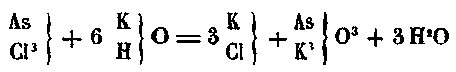
Fait-on réagir le chlore libre, c'est-à-dire le chlorure de chlore sur la potasse, on obtient du chlorure de potassium et de l'hypochlorite de potasse, par une réaction
analogue :
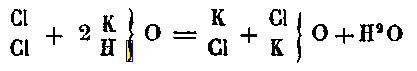
Je n'entrerai pas dans de plus amples détails sur cette question, si bien traitée d'ailleurs dans l'admirable ouvrage de Gerhardt. Je reviens à mon sujet.
Un corps contenant nécessairement, même dans les cas les moins compliqués, des molécules de trois ordres, ces molécules pourront chacune se grouper de différentes manières : d'où, pour chaque corps, trois espèces de modifications possibles :1° Les molécules de troisième ordre peuvent affecter plusieurs groupements différents. Dans ce cas, on obtient des phénomènes de polymorphisme. Les propriétés physiques sont changées. Les caractères chimiques restent les mêmes, puisque l'ordre, suivant lequel sont unis les éléments qui constituent les molécules physiques, n'a pas varié.
2° Les molécules secondaires, c'est-à-dire les molécules de chacun des éléments qui concourent à former la molécule physique, peuvent se grouper de diverses façons pour engendrer cette molécule. Dès lors, les phénomènes chimiques sont changés. On conçoit cependant qu'ils ne soient pas altérés au point de produire des corps incapables de se transformer les uns dans les autres. Dans ce cas, on a des phénomènes d'allotropie.
3° Les atomes de premier ordre peuvent se grouper d'une façon différente pour constituer les molécules élémentaires de chaque radical. De là, des différences suffisantes pour empêcher que les corps qui en résultent puissent se réduire les uns dans les autres ; de là, en un mot, des phénomènes d'isomérie. Ainsi le raisonnement nous démontre que les mêmes éléments réunis en mêmes proportions doivent donner naissance à trois ordres de corps : les premiers ne différant que par leurs caractères physiques; les seconds par leurs caractères chimiques , mais réductibles les uns dans les autres ; les troisièmes différant par leurs propriétés chimiques, et irréductibles les uns dans les autres. De plus, nous observons des phénomènes appartenant aux trois ordres que nous venons d'indiquer. Enfin, la science nous fournit trois mots appliqués indistinctement jusqu'ici à ces trois ordres de phénomènes, les mots, polymorphisme, allotropie, isomérie. Pourquoi ne pas donner à chacune de ces expressions une signification précise ? pourquoi chacune d'elles n'exprimerait-elle pas un des différents états dont je viens de parler ?
L'isomérie est donc le résultat d'un changement survenu dans les relations qui existant entre tes atomes de l'ordre le plus bas. Bien qu'on ne se rende pas compte de ce changement pour tous les cas d'isomérie connus, ces cas sont néanmoins assez nombreux aujourd'hui pour que l'on puisse déterminer, avec un certain degré de certitude, les causes de l'isomérie de certains composés.
Nous savons, par exemple, qu'il existe'une quantité considérable de carbures d'hydrogène isomères. [...] Ces formules montrent clairement que les différences,qui existent dans les propriétés physiques et chimiques de ces corps, s'expliquent sans que l'on soit obligé de supposer des groupements divers aux molécules élémentaires qui entrent dans leur constitution. Ces formules sont représentées par le même volume de vapeur, deux volumes. Il en résulte que, sous un volume égal, le caprylène C8H16 contient huit fois autant de carbone et huit fois autant d'hydrogène que le méthylène CH2. On ne peut donc plus s'étonner de voir ces composés présenter des propriétés distinctes, puisqu'il va une différence si grande entre l'éloignement de leurs atomes.
Cette condensation peut provenir de ce que les molécules d'hydrogène et de carbone se sont, pour ainsi dire tassées dans les carbures les plus élevés. Elle peut provenir aussi de ce que les atomes primitifs qui constituent les molécules de carbone et d'hydrogène se sont rapprochés.
Dans cette hypothèse, un atome de carbone, par exemple, contiendrait, dans les carbures élevés, une quantité de substance plus considérable que dans les carbures inférieurs. Le carbone se trouverait donc, dans chacun de ces composés, avec un équivalent différent.
Si les raisons que j'ai données pour expliquer l'allotropie et l'isomérie sont exactes, on doit se prononcer en faveur de cette seconde hypothèse. Mais comme il y a des faits qui paraissent la combattre, nous allons d'abord les réfuter.1° Les carbures d'hydrogène, dira-t-on, se transforment les uns dans les autres, puisqu'on obtient les inférieurs en faisant agir une température très-élevée sur les supérieurs.
Il ne faut pas oublier : que les carbures d'hydrogène sont des corps organiques ; que tous les corps organiques sont décomposés parla chaleur, et que la plupart d'entreeux donnent des carbures d'hydrogène par la calcination, sans être isomères avec eux avant d'avoir subi l'action de la chaleur. On ne peut donc rien conclure de cefait.
2° Si l'on prend un des carbures d'hydrogène neutres, —d'où dérivent les homologues du gaz oléfiant par soustraction de H2,—l'hydrure de propile C3H8, par exemple, on remarque que l'on peut substituer à l'hydrogène molécule par molécule, du chlore, du brome, etc. Si la condensation de l'hydrogène provenait de l'augmentation de son équivalent, on ne concevrait pas comment le chlore ou le brome pourraient le séparer de ces composés avec son équivalent ordinaire.Ces faits suffisent, il est vrai, à éloigner l'hypothèse qui attribuerait à l'hydrogène des équivalents divers, mais non à empêcher de l'admettre en faveur du carbone.
La condenbation des atomes primitifs ne porte que sur ce dernier élément, qui élève, en même temps que son équivalent, sa capacité en saturation. Je m'explique.
Prenons l'hydrure de méthyle CH4. Le carbone y est représenté par un équivalent égal à 12, et il est tétra-atomique puisqu'il exige pour sa saturation 4 atomes d'hydrogène que l'on peut remplacer par 4 radicaux monoatomiques quelconques ; et que, en lui enlevant successivement 1, 2, 3 molécules d'hydrogène sans les remplacer, on transforme ce corps en radicaux mono, bi, triatomique.
Prenons maintenant l'hydrure d'éthyle, C2H6. Le carbone y entre encore pour un seul équivalent, mais cet équivalent est devenu égal à C2, c'est-à-dire à 24. De plus, en même temps que son équivalent s'est élevé de 12 unités, sa capacité de saturation s'est élevée de 2; de sorte que de tetra il est devenu sex-atomique. En effet, on peut dans l'hydrure d'éthyle remplacer, molécule par molécule, tout l'hydrogène par du chlore, et produire ainsi un chlorure sex-atomique C2Cl6.
Ainsi nous pouvons supposer qu'à chaque terme de la série (en montant, bien entendu), l'équivalent du carbone augmente de 12, et sa capacité de saturation de deux unités. Cette hypothèse explique les faits aussi bien que toutes les autres. Elle a, en outre, l'avantage de laisser subsister la théorie que j'ai proposée pour expliquer la différence qui existe entre l'allotropie et l'isomérie, théorie qui, seule, pour le moment, satisfait l'intelligence. Je m'y rattache donc, tout en déclarant que je ne lui attribue qu'une valeur d'hypothèse.
Quoi qu'on en pense, et quel que soit le mode selon lequel les condensations s'effectuent, il est un fait avéré, c'est qu'il suffit pour changer les propriétés d'un composé, que la quantité de matière qu'il contient sous un volume donné varie, bien que, d'ailleurs, ses éléments se trouvent toujours unis dans les mêmes rapports.
Les corps qui doivent leur isomérie à des condensations différentes se nomment polymères. Ceux qui la doivent à une autre cause ont reçu le nom de métamères.
Dans son Cours de philosophie chimique M. Dumas, après avoir parlé des divers carbures d'hydrogène que j'ai cités, s'occupe de plusieurs autres corps, et particulièrement de l'acétate de méthyle et du formiate d'éthyle, dont l'isomérie, dit-il avec raison, ne peut provenir que de la manière dont sont groupées les molécules, puisque la composition, l'équivalent et la densité de vapeur sont les mêmes. (Il était nécessaire à cette époque de dire l'équivalent et la densité de vapeur, puisqu'on ne ramenait point toutes les formules à un même volume.) Nous formulons aujourd'hui l'acétate de méthyle :
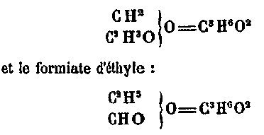
II est impossible ici d'expliquer l'isomérie par l'état du carbone, comme nous l'avons fait pour les carbures d'hydrogène homologues du gaz oléfiant et du gaz desmarais. En effet, dans l'acétate de méthyte comme dans le formiate d'éthyle, le carbone semble entrer à la fois avec les deux équivalente 12 et 24, avec les deux capacités de saturation 4 et 6, d'où il résulte que la théorie que J'ai présentée pour expliquer les faits d'isomérie paraît être en défaut. Il n'en est rien cependant.
On a donné le nom de radical à toute molécule simple, ou à tout groupement de molécules, capable, soit de se transporter d'une combinaison chimique dans l'autre par voie de double décomposition, soit d'être isolé et de s'unir, par synthèse directe, avec les corps pour lesquels il a de l'affinité. II n'y a d'ailleurs, entre les radicaux simples et les radicaux composés, d'autre différcnce que celle qui résulte du fait même de la composition de ces dernières. Les uns et les autres se comportent exactement de la même manière dans toutes les réactions.
On n'a aucune peine à admettre que deux corps simples, en s'unissant à deux autres corps simples, puissent produire des combinaisons différentes. Il ne faut donc pas s'étonner, lorsqu'on voit deux radicaux composés, de nature diverse, donner naissance à des combinaisons différentes, en s'unissant à deux autres radicaux composés, de nature également diverse.
Ces prémisses admises, il est facile de se rendre compte de l'isomérie du formiate d'éthyle et de l'acétate de méthyle. La molécule du premier de ces corps représente une molécule d'eau, dans laquelle un atome d'hydrogène est remplacé par le radical éthyle et l'autre par le radical formyle. La molécule du second de ces éthers représente, de son côté, une molécule d'eau, dans laquelle un atome d'hydrogène est remplacé par le méthyte, tandis que l'autre l'est par l'acétyle. Il est vrai que, dans l'acétyle, le carbone entre avec un équivalent égal à 24, et une capacité de saturation égale à 6, comme dans l'éthyle; mais l'acétyle et l'éthyle n'ont point la même composition, puisque dans l'un de ces radicaux il y a une molécule d'oxygène biatomique O, en remplacement de deux des molécules d'hydrogène qu'on rencontre dans l'autre. Il est également exact de dire que dans le méthyle comme dans le formyle, le carbone entre avec un équivalent égal à 12 et une capacité de saturation égale à 4 ; mais le formyle et le méthyle diffèrent par leur composition, puisque l'un de ces radicaux contient trois atomes d'hydrogène, tandis que dans l'autre, deux de ces atomes sont remplacés par une molécule d'oxygène. Le méthyte et le formyle d'une part, l'acétyle et l'éthyle de l'autre, diffèrent par conséquent entre eux, tout autant et même plus, que le chlore ne diffère du brome par exemple.
Dès lors, il est évident que ces deux radicaux si différents, en se combinant à deux autres radicaux qui présentent entre eux des différences aussi grandes, doivent donner naissance a deux produits qui diffèrent aussi; et il suffit, pour se faire une idée de l'isomérie de l'acétate d'éthyle et du formiate de méthyle, de supposer que dans chacun de ces composés les radicaux, dont il vient d'être question, existent tout formés. Sans doute cela peut ne pas être vrai, mais il est fort probable qu'il y a dans ces corps des groupes distincts fonctionnant comme nous venons de l'indiquer, que ce soient ceux que les réactions nous portent à admettre, ou que c'en soient d'autres.
Ce ne sont là que des hypothèses ; malheureusement il nous est impossible de connaître, d'une manière absolue, comment, dans un corps, les molécules sont groupées; et, dès que les cas d'isomérie ne sont plus explicables par des différences de condensation, les raisons que nous en donnons sont nécessairement hypothétiques.
On essayera peut-être de retourner contre nous cette explication. Vous sortez, dira-t-on, des suppositions que vous avez hasardées pour appuyer la distinction que vous avez voulu établir entre l'allotropie et l'isomérie. Quels que soient vos arguments, il n'est pas moins constant que l'acétate méthyliquc et le formiate éthylique ne diffèrent que par la place relative que l'hydrogène et l'oxygène occupent dans chacun d'eux, c'est-à-dire par une de ces différences de groupements moléculaires que vous considérez comme caractéristiques de l'allotropie, bien que votre définition vous oblige de considérer ces deux corps comme isomères, puisqu'ils ne pouvaient se transformer l'un dans l'autre.
II est facile de réfuter cette objection : Si j'ai pu assimiler aux corps simples les corp composés dans lesquels il n'entre que des radicaux simples et dire qu'ils contiennent trois catégories de molécules seulement, je ne saurais établir la même confusion entre les corps simples et les corps composés dans lesquels fonctionnent des radicaux complexes. Ici, au lieu de trois séries de molécules, nous en rencontrons quatre :A. Les atomes primitifs qui composent les molécules des éléments simples ;
B. Les molécules de chacun des éléments simples qui entrent dans la constitution des radicaux composés, ou molécules de deuxième ordre ;
C. Les masses qui représentent l'équivalent de chaque radical composé, ou molécules de troisième ordre;
D. La molécule de quatrième ordre, c'est-à-dire, le degré ultime de division auquel on peut réduire le corps composé lui-même sans le détruire.Le deuxième terme de celle série correspond évidemment, par sa complication, au premier terme que j'ai admis pour les corps élémentaires, et, pour les corpscomposés et radicaux simples ; et les faits d'isomérie qui en dépendent, sont par là même des faits d'isomérie véritable. Quant aux changements qui surviennent dans le groupement ou la condensation des atomes qui constituent le premier terme de cette série, ils modifient sans doute très-profondément la nature des corps ; mais les modifications sont déjà assez intenses lorsqu'elles dépendent des molécules de deuxième ordre, pour qu'il ne soit pas utile d'exprimer les autres par un nom particulier. Il m'est donc permis de désigner indifféremment, par le nom d'états isomériques, les états produits par les changements survenus dans la place qu'occupent, relativement les uns aux autres, soit les atomes de premier, soit les atomes de second ordre. Ce n'est que si les différences portaient sur les atomes de troisième ordre, que l'on aurait affaire à des phénomènes d'allotropie. Les formules rationnelles suivantes feront comprendre mes idées :
Soit le formiate d'éthyle
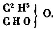
Pour produire une modification allotropique de ce corps, il faudrait, si mes idées sont justes, qu'on parvînt à changer la disposition des molécules de troisième ordre, c'est-à-dire des molécules d'éthyle, de formyle et d'oxygène. Ainsi, le corps dont la formule serait
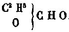
se présenterait à nous comme un état allotropique du formiate d'éthyle. Il en serait de même de celui qui aurait pour formule
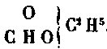
Change-t-on, au contraire, la disposition des atomes élémentaires dans chaque radical, modifie- t-on les positions respectives des atomes de deuxième' ordre,on a un cas d'isomérie. Ainsi, l'acétate de méthyle
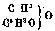
est un isomère du formiate d'éthyle. Il ne faut pas oublier que ces formules ne sont pour moi que des moyens d'exposer clairement mes idées. Nous ignorons, non seulement quelle est la disposition affectée dans le formiate d'éthyle, par l'éthyle, le formyle et l'oxygène, mais encore si l'éthyle et le formyle s'y trouvent tout formés. Cependant, nous avons le droit de supposer que ce corps renferme des radicaux, et qu'on lui ferait prendre certains états allotropiques, si l'on parvenait à changer la position relative de ces radicaux, quelles que soient d'ailleurs leur nature et leurs positions relatives.
J'ai dit qu'il y avait des cas, — ce sont les plus compliqués,— où isomérie paraissait être le résultat de changements survenus dans la disposition des molécules de deuxième ordre, et dans celle des atomes de premier ordre. En voici un exemple : M. Dumas, dans l'ouvrage cité plus haut, parle de l'alcool et de l'oxide de méthyle; il explique leur isomérie, en prétendant qu'ils n'ont pas le même équivalent bien que le degré de leur condensation soit le même. A l'époque de la publication de ce travail, on écrivait la formule de l'alcool C8H12O2, et celle de l'oxide de méthyle C4H6O. Or, en examinant ces deux formules, on voit que la composition centésimale des corps qu'elles représentent, est la même, bien qu'elles se rapportent, l'une à 4, et l'autre à 2 volumes de vapeur. Si donc elles exprimaient réellement leurs équivalents, ceux-ci seraient différents, la condensation restant égale, puisque les deux corps ont une densité de vapeur représentée par le même nombre, et cette particularité pourrait expliquer les différences que l'on remarque dans leurs propriétés.
J'ignore si, depuis cette époque, M. Dumas a abandonné cette théorie. Il n'existe aucune raison plausible pour rapporter les formules, les unes à 2, les autres à 4 volumes. Au contraire, tout porte à penser que l'équivalent en volume est le même pour tous les corps. Aussi représente-t-on, aujourd'hui, l'alcool ordinaire et l'oxide de méthyle, par une seule formule : C2H8O (1). Leur isomérie ne peut donc résulter de la différence de leurs équivalents, mais bien de la manière dont sont groupées leurs parties constituantes.
L'alcool peut être considéré comme un hydrate d'oxide
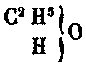
d'éthyle et l'éther mélhylique,comme un oxide anhydre de méthyle.
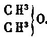
On conçoit dès lors, qu'étant constitués par des radicaux différents, ces corps
puissent jouir de propriétés distinctes. Cela suffirait au besoin à expliquer qu'ils sont isomères, puisqu'ils diffèrent par la manière dont sont groupés leurs atomes de deuxième ordre.
Cependant la différence est ici plus complète encore. Elle porte sur les atomes de deuxième et sur les atomes de premier ordre. Qu'est-ce en effet que le méthyle ?
C'est un radical mono-atomique dérivé du carbure d'hydrogène neutre CH4, par soustraction d'un atome d'hydrogène. — Qu'est-ce que l'éthyle ? C'est un radical mono-atomique dérivé, par une soustraction analogue, du carbure neutre C2H6. D'après ce que j'ai déjà dit, on comprend qu'ayant, dans le gaz des marais CH4, unéquivalent égal à 12, et dans l'hydrure d'éthyle C3H6 un équivalent égal à 24, le carbone doit intervenir de même dans le méthyle avec un équivalent égal à 12,et dans l'éthyle avec un équivalent égal à 24.
Dans ces deux radicaux, le carbone a conservé la capacité de saturation qu'il présente dans les carbures neutres d'où ils dérivent, ainsi que le démontre la tendance du méthyle et de l'éthyle à s'assimiler l'atome mono-atomique qui leur manque pour arriver aux types CX4 et C2X6. Dès lors, dans l'alcool, il n'existe qu'une seule molécule de carbone. Mais cette molécule de carbone possède une quantité de matière deux fois plus forte, c'est-à-dire, un équivalent double de celui qui représente un atome de carbone dans l'oxide méthyle.
D'autre part, tandis que l'hydrate d'oxide d'éthyle possède une seule molécule de carbone, l'oxide anhydre de méthyle en possède deux.
L'oxide de méthyle et l'alcool ordinaire diffèrent donc par la manière dont sont groupées leurs molécules de deuxième ordre, et par l'état de condensation des molécules de carbone, c'est-à-dire, de quatrième ordre ; par suite, ils représentent un phénomène de l'isomérie la plus compliquée.
Je me suis assez étendu, je pense sur les considérations théoriques que nécessitait le sujet. J'arrive maintenant à la seconde partie de mon travail. [...]Existe-t-il des corps simples isomères ?
Cette question est impossible à résoudre dans l'état actuel de la science. Elle touche à l'hypothèse de l'unité de substance, et de la transmutation des métaux.
Tout ce qu'on peut affirmer, c'est qu'il n'est point absurde de supposer certains éléments isomères : c'est, là, du moins, l'opinion de M. Dumas.
Ce chimiste s'appuie sur ce que les substances isomères ont des équivalents identiques ou multiples les uns des autres. Comme certains métaux ont le même équivalent (ainsi, le platine et l'iridium, l'osmium et l'or, etc.). Et que, tous les équivalents des corps élémentaires représentent les multiples d'un nombre qui serait le quart de l'équivalent de l'hydrogène. Il en conclut qu'il est possible qu'il n'existe qu'une seule substance, dont une première condensation produirait l'hydrogène, et, dont une condensation ultérieure produirait tous les corps (Cours de Philosophie chimique, p. 318 et Annales de Chimie et Physique, 3e série, t. LV, p. 129).2)- l'hypothèse de Jean-Baptiste Dumas : la substance unique des corps simples.
Extrait d'un livre intitulé Mémoire sur les Equivalents des corps simples, dû à J.B. Dumas [Mallet-Bachelier, Paris, 1859].
Les équivalents des corps simples, c'est-à-dire les poids respectifs des particules matérielles dont la combinaison donne naissance à tous les corps de la nature, ont été déterminés pour la plupart par Berzelius avec une telle attention, qu'ils suffisent à tous les besoins de la chimie pratique, même dans des circonstances délicates et compliquées. A leur aide, la vraie formule des corp composés se manifeste toujours, et ils ne laissent aucune hésitation dans l'esprit de celui qui les emploie pour remonter des résultats bruts d'une analyse à leur expression symbolique.
Le carbone seul constituait à cet égard une exception considérable. Son équivalent, évalué trop haut, rendait incertaines ou même fausses les formules de tous les corps de la chimie organique, riches en carbone, dont les analyses avaient été exactement conduites. Sa rertification ayant été suivie d'un remaniement de ces formules, rien n'indique aujourd'hui dans les recherches nombreuses dont les matières organiques sont l'objet, que les éléments des calculs adoptés pour leur interprétation laissent à souhaiter du côté de la précision.
Il semblerait, par conséquent, peu nécessaire de revenir désormais sur un sujet épuisé, si ce n'est pour faire connaître les équivalents de quelques corps nouvellement découverts ou pour rectifier certains équivalents en petit nombre dont la détermination aurait été opérée d'abord au moyen de substances d'une pureté douteuse.
Cependant j'ai cru qu'il pouvait être profitable aux intérêts de la science d'entreprendre une révision générale des équivalents des corps simples. Elle m'occupe depuis longtemps et elle ne sera certainement pas terminée avant la fin de l'année prochaine. Il faut de longues heures de travail et de grands efforts d'attention, en effet, pour se procurer les matières variées qu'une telle recherche exige, pour les analyser ailn de s'assurer qu'elles sont parvenues à l'état de pureté indispensable en pareil cas, et pour les soumettre enfin aux épreuves d'où l'on tire la détermination précise de l'équivalent qu'elles sont destinées à faire connaître.
Si j'ai cru cette révision nécessaire, c'est que les chiffres exacts qui représentent les équivalents des corps simples ne sont pas seulement utiles au manufacturier qui y trouve la règle et la critique des opérations de sa fabrique, au chimiste qui les emploie pour traduire ses analyses en formules, au physicien qui en a fait la véritable unité de poids sous laquelle les propriétés des corps sont devenues comparables, c'est que de plus ces chiffres semblent encore ouvrir à la philosophie naturelle, par les rapports singuliers qui s'y révèlent, de nouveaux et profonds horizons.
Berzelius, qui a fait de cette question l'objet des expériences et des méditations de toute sa vie, était resté convaincu que les chiffres représentant les équivalents des corps simples n'avaient entre eux que des rapports fortuits, lesquels même s'évanouissaient le plus souvent à mesure que l'expérience, mieux interrogée, permettait à l'observateur de serrer de plus près les valeurs véritables de chaque équivalent.
Au contraire, un chimiste anglais, le Dr Prout, signalait, il y a longtemps, une relation singulière qui se manifeste entre ces chiffres si disparates au premier abord, et montrait que, l'équivalent de l'hydrogène étant pris pour unité, ceux des corps simples les plus connus s'expriment généralement par des nombres entiers, et même le plus souvent par des nombres peu élevés.
En outre, on a reconnu que certains équivalents, ceux des corps les plus analogues par leurs propriétés, sont quelquefois égaux, ou qu'ils paraissent du moins être liés entre eux par des rapports très-simples, tels que celui de 1:2.
On a reconnu de plus que, si l'on considère trois corps très-rapprochés les uns des autres par leurs allures chimiques, l'équivalent du corps intermédiaire paraît être assez souvent représenté par la moyenne exacte du poids des équivalents des deux éléments extrêmes.
Enfin, ayant été amené, en 1851 dans une séance de l'Association britannique pour l'Avancement des Sciences, à exprimer mon sentiment sur la cause même de ces relations, que j'avais souvent signalées à l'intérêt des chimistes, je fis voir que, d'après la comparaison des chiffres obtenus pour représenter les équivalents des éléments simples proprement dits, il était permis de penser que ces chiffres seraient engendrés suivant des lois semblables à celles qu'une étude attentive fait découvrir, dans la génération des équivalents des éléments composés ou radicaux, de la chimie organique.
Ainsi deux opinions sont en présence :
- L'une, qui semble avoir été suivie par Berzélius, conduit à envisager les corps simples de la chimie minérale comme des êtres distincts, indépendants les uns des autres, dont les molécules n'ont rien de commun, sinon leur fixité, leur immutabilité, leur éternité. Il y aurait autant de matières distinctes qu'il y a d'éléments chimiques.
- L'autre permet de supposer, au contraire, que les molécules des divers corps simples actuels pourraient bien être constituées par la condensation d'une matière unique, telle que l'hydrogène, par exemple, en acceptant toutefois bien entendu comme vraie la relation observée par le Dr Prout et même comme fondé le choix de son unité. [il est clair, au vu de la classification périodique, que Dumas était à juste titre fondé à formuler on hypothèse.] Celle-ci conduirai à admettre que des quanlilés semblbles de cette matière unique pourraient, par des arrangements différents, constituer des éléments ou radicaux de même poids, mais doués de propriétés distinctes.
Elle ne répugnerait pas à envisager la molécule d'un radical intermédiaire entre deux autres radicaux appartenant à une même famille comme étant produite par l'union de deux demi-molécules des radicaux extrêmes.
Enfin elle assimilerait par leur constitution présumée les radicaux supposés simples de la chimie minérale aux radicaux composés de la chimie organique dont la constitution est connue, les premiers différant toutefois des seconds par une stabilité infiniment plus grande et telle, que les forces dont la chimie dispose aujourd'hui feraient insuffisantes pour en opérer le dédoublement.[les physiciens de la fin du XIXe siècle commencèrent à entrevoir la solution du problème]
Ces problèmes, qui peuvent assurément être rangés parmi les plus élevés que la chimie ait à se proposer et a résoudre, sont-ils abordables à l'aide des nombres réunis avec tant de persévérance et de talent par Berzélius ? Je ne le pense pas. J'ai souvent essayé, comme M. Josiah Cooke l'a fait de son côté, de les comparer, de les combiner et de les discuter avec l'espoir d'en tirer avec certitude une conclusion quelconque, et je n'ai pu en faire sortir autre chose que le doute. Si quelques-uns des équivalents pouvaient se classer, sans corrections, dans un petit nombre de séries comme des termes liés entre eux par d'incontestables relations numériques, il en est d'autres, et ce sont précisément les mieux connus, pour lesquels toute tentative de ce genre restait sans résultat.
Je n'osais donc ni regarder comme vains et fortuits des rapports remarquables par leur précision, leur simplicité et leur fréquence, ni considérer comme générale une loi sujette aux plus graves et aux plus importantes exceptions. Restait dès lors à prendre le seul parti d'accord avec la philosophie des sciences expérimentales, c'est-à-dire, comme je l'avais propose à Ipswich, décomposer le problème général en questions spéciales assez circonscrites pour en devenir susceptibles d'être traduites en expériences et d'être soumises à l'éprenve décisive de l'observation directe, au jugement impartial de la balance.3)- l'argentaurum - analogie de sa préparation avec ce que nous rapportent les textes alchimiques
En 1889, un chimiste, Carey Lea, découvrit la préparation d'une forme allotropique de l'argent alors qu'il travaillait sur la réduction du nitrate d'argent [pierre infernale]. On savait depuis longtemps qu'on obtenait parfois dans des solutions d'argent des taches jaune d'or ; on les obtenait de façon aléatoire et en très petite quantité. Cela avait excité l'imagination des alchimistes qui s'étaient imaginés que l'argent pouvait être transmué en or. Mais, cette substance jaune n'est en fait qu'une forme allotropique de l'argent. Il est très probable que plusieurs chimistes, oeuvrant de façon parfaitement indépendante les uns des autres, aient réussi à obtenir cette variété particulière d'argent. Tel semble être le cas pour Théodore Tiffereau, le Dr Stephen-H. Emmens et F. Jollivet-Castellot. Voyons en quoi consistait les méthodes de ces différents chercheurs :
a)- procédé de Tiffereau : « après avoir exposé pendant deux jours, à l'action des rayons solaires de l'acide azotique pur, j'y projetai de la limaille d'argent pur allié à du cuivre pur dans la proportion de l'alliage de la monnaie ». Tiffereau laiisa la réaction se faire pendant une douzaine de jours, observant qu'il se formait un dépôt dans le récipient. Il fit évaporer à sec puis, nettoyant ce dépôt à l'acide azotique pur, le vit « prendre le brillant de l'or naturel » [G.T. Tiffereau : les métaux sont des corps composés, Paris, 1857, 1889, 1924] ;
b)- procédé de Jollivet-Castellot : « additionnant peu à peu de l'argent chimiquement pur [...] réduit en poudre, d'une petite quantité de trisulfure d'arsenic soit seul, soit uni à une très petite quantité d'oxysulfure d'antimoine (kermès) en poudre également et chimiquement purs, dans les proportions approximatives de 1/3 à 1/4 par rapport à l'argent, et chauffant le tout dans un creuset, au four, à 1200°C environ pendant une heure, j'ai obtenu des culots d'argent jaune qui, à l'analyse, ont donné parfois des traces très appréciables d'or. » [E. Jollivet-Castellot : la Révolution chimique et la transmutation des métaux, Paris, 1925]
c)- procédé de Carey Lea : l'obtention de l'argent allotropique - que l'on peut appeler aussi argentaurum est une opération singulière. Plusieurs méthodes essayées par Carey se sont soldées par des demi-échecs : l'argent jaune se transformait au bout de quelques mois en argent blanc, très beau...Une seule méthode l'a conduit à un résultat tout à fait permanent. A cette fin, le procédé consiste à préparer deux mélanges :
- le premier doit contenir 200 cc d'une solution à 10 % de nitrate d'argent [pierre infernale], de 200 cc d'une solution à 20 % de sel de La Rochelle [c'est-à-dire su sel de Seignette] et de 800 cc d'eau déminéralisée [c'est-à-dire d'eau de rosée ou eau distillée].
- le second doit contenir 107 cc d'une solution à 30 % de sulfate ferreux [vitriol vert], 200 cc d'une solution à 20 % de sel de La Rochelle et de 800 cc d'eau distillée.La deuxième solution doit être versée dans la première en agitant constamment [notez que la solution n°2 doit être mélangée immédiatement avant d'être utilisée, donc versée dans la 1ère]. On assiste alors à l'apparition d'une poudre, d'abord rouge, qui devient noire en sédimentant. Filtrée, elle présente une superbe couleur de bronze. Après lavage, on l'obtient sous une forme pâteuse : elle doit être étendue sur un bassin plat et soumise à la dessication. L'opération consiste en une réduction du nitrate d'argent par le sulfate ferreux. Pendant l'opération du lavage, le filtre doit toujours être rempli d'eau. Au sèchage, on obtient une poudre présentant l'aspect de l'or fortement poli. Voici les références bibliographiques sur le travail de Carey Lea :
Lea, Carey: Amer. Sci. J. (Series 3) 37 (222): 476-491 (June 1889); ibid., 38 (223): 47-50 (July 1889); ibid., 38 (224): 129 (August 1889); ibid., 38 (225): 237-241 (September 1889); ibid., 41 (243): 179-190 (March 1891); ibid., 42 (250): 312-317 (October 1891); ibid., 48 (148): 343 (October 1894); ibid., 51 (24): 259-267 (April 1891); ibid., 51 (246): 282-289 (April 1891). Zeit. Anorg. Allgem. Chem. 7: 340-341 (1894)
Le lecteur, qui a déjà parcouru quelques pages de notre site, n'aura pas manqué d'établir des points étonnants de correspondance entre les substances utilisées par Carey Lea et les substances dont nous avons déterminé qu'elles étaient essentielles à l'oeuvre. Et que d'autre part, les alchimistes anciens avaient la possibilité de préparer :
- pierre infernale [caustique perpétuel] ;
- sel de Seignette [sel de La Rochelle];
- eau forte [esprit de nitre] ;
- vitriol vert.a)- la pierre infernale : il s'agit du nitrate d'argent [d'où les relations établies par Canseliet entre la photo et l'alchimie, via Charles Cros]. Cette pierre est aussi appelée par les anciens chimistes le caustique perpétuel. Pour la préparer, nous allons suivre le cours de Chymie de Lémery :
Faites dissoudre dans une phiole telle quantité d'argent qu'il vous plaira avec trois fois autant d'esprit de nitre : mettez votre phiole sur le feu de sable, et faites évaporer environ les deux tiers de l'humidité. Renversez le restant tout chaud dans un bon creuset d'Allemagne assez grand à cause des ébullitions qui se feront : Placez-le sur un petit feu, et l'y laissez jusques à ce que la matière qui se sera beaucoup raréfiée, s'abaisse au fond du creuset. Augmentez alors un peu le feu, et elle deviendra comme de l'huile : Versez-là dans une lingottière un peu graissée et chauffée, elle se coagulera ; après quoi vous pourrez la garder dans une phiole bien bouchée. C'est un caustique qui dure toujours, pourvu qu'on ne le laisse point exposé à l'air : on peut faire cette pierre avec du cuivre en place d'argent, mais elle ne se garde pas tant ; parce que le cuivre étant frot poreux, l'air s'y introduit facilement et la fond. Remarques : [...] Si on faisait fondre les cristaux de Lune dans un creuset sur le feu, et qu'on fit bouillir la liqueur jusques à ce qu'elle devint comme de l'huile, et qu'après on la jetait dans une lingottière, ce serait de la Pierre Infernale semblable à celle que nous décrivons.Il faut rapprocher la préparation de la pierre infernale de celle de l'argent corné [Diane]. La calcination de l'argent se fait par le contact avec de l'eau forte. On y verse de l'esprit de sel [acide muriatique, acide chlorhydrique] qui précipite l'argent corné. Le nitrate d'argent ou azotate d'argent est isomorphe avec le nitrate de potassium [salpêtre] et le nitrate de soude. Notez que de l'argent allié au cuivre peut être utilisé à la place de l'argent. On dissout dans de l'acide nitrique puis on évapore au bain de sable et l'on continue à chauffer doucement, jusqu'à ce que tout l'azotate de cuivre bleu se soit décomposé en oxyde noir [c'est la première noirceur des philosophes chymiques...]. A ce moment, l'azotate d'argent plus stable, est encore intact. On reprend par l'eau, on filtre et on fait cristalliser. La pierre infernale est un beau corps blanc qui se dissout dans son poids d'eau froide et dans la moitié de son poids d'eau bouillante. Il noircit lentement sous l'action de la lumière, ce qui explique pourquoi Fulcanelli nous signale, dans le Mystère des Cathédrales, un tableau où l'on voit un chevalier qui protège l'athanor des influences extérieures.
FIGURE I
(bas-relief du portail central de Notre-Dame de Paris - Mystère des Cathédrales)On peut, en effet, considérer par cabale que l'athanor - vase de nature, c'est-à-dire Mercure - est en puissance constitué de deux éléments : la pierre infernale d'une part et le sel de La Rochelle d'autre part. S'est-on demandé pourquoi l'un des emblèmes des Douze Clefs de Philosophie attribuées au pseudo Basile Valentin montre Saturne, à droite sur la planche I, avec un pilon à la place de sa jambe ? C'est parce que les alchimistes sont gens pleins d'esprit, ce qui n'étonnera pas ceux qui sont au fait des mystères des Sages. On dit en effet que l'on fait une chose vaine, futile ou inutile quand on dit « appliquer une cautère sur une jambe de bois ». Par là même, on fait coup double si l'on peut dire. Car on sait ce que recouvre « les choses vaines et inutiles » qui ont induit en confusion les historiens de l'alchimie qui se sont imaginés que Denis Zachaire et le Bon Trévisan avaient errés comme des aveugles pendant des lustres. Ou pourquoi Cyliani, en son Hermès Dévoilé, se plaint amèrement des torts qui lui ont été faits, etc.
Mais enfin, reprenons ce que nous disions sur l'azotate d'argent. Ce produit, destiné aux usages de l'art de guérir [il y a là une indication], est ordinairement noir, particulièrement à sa surface. Cela a donné à E. Canseliet et à Fulcanelli, qui avaient beaucoup d'esprit, des joyeusetés en matière de cabale, telles que les traits de cabale développés sur la Vierge Noire, etc. Quoi qu'il en soit, cette couleur noire est purement accidentelle et tient à ce qu'une partie de l'azotate a été réduite par le fer de la petite lingotière dans laquelle on coule la pierre infernale. La coloration grisâtre de cette pierre [le loup gris de Basile Valentin] tient surtout à ce qu'on prépare celle-ci avec l'argent du commerce qui n'est jamais pur et qui contient ordinairement du cuivre. Pendant la fusion, l'azotate de cuivre se réduit en oxyde de cuivre d'un brun foncé, qui est entraîné par l'azotate d'argent fondu. Pour faire de la pierre infernale blanche et de bonne qualité, il faut chauffer l'azotate d'argent, puis le laisser refroidir lentement ; de cette manière l'oxyde de cuivre gagne le fond du vase et s'y dépose [on saisit toute la mesure de cabale que les alchimistes n'ont pas manqué d'apposer à cette partie de l'oeuvre : d'un côté, nous avons le Caput mortuum - tête morte de la pierre infernale - et de l'autre, le Ciel des philosophes qui contient le sel de Jupiter]. Une fois repris, l'azotate d'argent déflagre sur les charbons ardents et, mêlé avec du soufre et du phosphore, il détonne sous le choc du marteau. Lorsqu'on verse du protochlorure d'étain dans une dissoslution étendue d'azotate d'argent, on obtient, après l'addition de quelques gouttes d'acide sulfurique affaibli [huile de vitriol], un précipité pourpre, mais qui n'a pas, comme le pourpre de Cassius, la propriété de colorer les verres. Notons que les anciens chimistes appelaient aussi cristaux de lune, l'azotate d'argent obtenu par le refroidissement de la réaction de l'argent sur l'eau forte. Ce sel se trouve mentionné déjà au IXe siècle par Geber. C'est Glaser [dont nous avons donné un extrait] qui, en 1603, en parle comme devant être fondu et coulé dans une lingotière. La déflagration que nous avons évoquée supra donne un argent mat, très blanc, auquel on donne aisément par le frottement, le brillant métallique. C'est là ce que Boerhaave nommait l'argent ardent. La dissolution d'azotate d'argent est promptement décomposée par tous les corps avides d'oxygène, par les matières organiques, et voila pourquoi elle tache fortement la peau en noir, d'une manière indélébile, ainsi qu'Albert le Grand l'a remarqué le premier. Les coiffeurs l'emploient pour noircir les cheveux rouges ou blancs, et ils la vendent sous les noms d'eau de Perse, d'eau d'Egypte, d'eau africaine et d'eau de Chine. La coloration des cheveux est due à ce qu'ils renferment du soufre, qui donne lieu à la formation d'une légère couche de sulfure noir. Glauber connaissait déjà cette propriété du sel d'argent de brunir les matières organiques ; mais c'est Shaw qui, en 1758, a conseillé l'emploi de sa dissolution pour teindre les cheveux en noir. Les lames métalliques qu'on plonge dans la dissolution d'azotate d'argent se recouvrent très rapidement d'une belle végétation d'argent. En employant le mercure, on obtient l'arbre de Diane des alchimistes. C'est Eck de Sulzbach [1, 2, 3, 4, 5,] qui, dans le XVe siècle, a fait la première mention de l'arbre de Diane.Nous en avons parlé ailleurs, dans la section sur le tartre vitriolé. Nous ajouterons à cela deux choses :
- la note d'E. Canseliet annexée, qui fait explicitement état de trois composés dont nous parlons actuellement ;
- notes complémentaires sur le sel de Seignette : il s'agit donc d'un tartrate double de potasse et de soude. On obtient ce sel en saturant la crème de tartre par du carbonate de soude [natron]. Ce sel se dépose en cristaux volumineux qui sont des prismes rectangulaires à base rhombe. Ces cristaux s'effleurissent à l'air et fondent dans leur eau de cristallisation avant de se décomposer. Le sel de Seignette fut employé en médecine comme purgatif...Il est aussi appelé tartrite de potasse. Sur le plan de la cabale hermétique, nous pouvons dire qu'il est des parties de Vénus.Sa préparation a déjà été vue plusieurs fois. Veuillez chercher cet acide en mode recherche. Nous ajouterons seulement ici, en manière de synthèse, qu'on peut rapprocher par cabale sa préparation en nous rappelant de ce que disait Canseliet : « tout en est bon » pour signifier que l'esprit vaut ici autant que la tête morte. L'esprit de nitre permet la préparation de la pierre infernale et le Caput mortuum est utilisé pour préparer le tartre vitriolé [arcanum duplicatum, sel de duobus, sel polychreste de Glaser, etc.]
Voyez la section chimie et alchimie pour les vitriols.
4)- un article sur l'argentaurum
Voici un texte de Paul Bary sur ce mystérieux alliage.
REVUE DE PHYSIQUE ET DE CHIMIE ET DE LEURS APPLICATIONS INDUSTRIELLES
SOMMAIRE DU N° II
M. Paul Bary : L'argentaurum.
Revues Mensuelles : Physique. — Chimie. — Applications industrielles. — Bibliographie. — Chronique. — Brevets.
L'ARGENTAURUM
Par M. Paul BARY
La Revue a annoncé, dans son numéro du 10 novembre 1896, la formation de l'Argentaurum Syndicate, ayant pour but de poursuivre les études déjà commensées par le Dr Emmens sur la transmutation de l'argent en or, et même d'entreprendre l'application industrielle de ses procédés. Les noms célèbres non seulement en Amérique, mais sur le continent, de MM. Testa, Carey Lea, Edison, etc., membres du Syndicat, n'empêchèrent pas la nouvelle d'être considérée comme peu sérieuse et dépasser a peu près inaperçue.
Les doutes ne sont pas levés aujourd'hui, car les éléments d'appréciation manquent encore trop ; d'ailleurs, quelques preuves ne suffiront probablement pas à satisfaire l'opinion : ces expériences touchent un chapitre des sciences considéré comme immuable, en ce qui concerne au moins l'expérience. Beaucoup de savants admettent volontiers la théorie qui suppose que tous les corps simples connus, de jour en jour plus nombreux, dérivent tous par condensation d'un élément primordial placé à la base de l'échelle des corps connus ou au dessous. Notre regretté Directeur scientifique, P. Schützenberger, dans un article paru ici même (Revue, n°1, p. 5), nous a exposé les vues dos promoteurs de cette idée et, en particulier, celles de M. Hinrichis, qui a nommé cet élément le pantogène. La théorie a donc des adeptes ; c'est une chose simple, satisfaisant l'esprit et expliquant même les propriétés graduellement variées des corps dits élémentaires.
Par contre, la transmutation d'un corps en un autre, qui n'est que l'application de la théorie du pantogène, n'est guère admise par personne, n'est pas même discutée.
Bien des alchimistes ont réussi à fabriquer l'or et, parmi eux, certains ont laissé la preuve indubitable [voyez notamment Alexandre Sethon] qu'on ne pouvait s'en prendre à leur bonne foi, mais seulement à leur ignorance : la transmutation se ramenait à une simple méthode de séparation. Depuis longtemps l'analyse tient les chimistes en garde contre de telles erreurs. Résulte-t-il de ce que ces expériences étaient erronées que la transmutation est impossible ? Nous ne le croyons pas. Ce quiparaît à peu près démontré, c'est que les moyens employés actuellement en chimie sont incapables de produire dans les corps des modifications de cette nature.Les essais faits par le Dr Stephen-H. Emmens ne ressemblent en rien aux méthodes chimiques couramment employées dans les laboratoires et dans l'industrie ; il ne sera donc pas impossible d'admettre, après vérification, que les résultats obtenus soient entièrement différents.
La nouvelle aurait probablement trouvé plus facilement crédit, si les expériences avaient été faites sur tous autres corps que l'argent et l'or, ces deux métaux sensationnels, sensationnels surtout aux Etats-Unis où les argentistes sont maintenant à la tête du gouvernement.
Quoi qu'il en soit, nous publions sur cette question la totalité des documents que nous avons pu réunir, qui se composent de lettres échangées entre l'auteur et différents savants ; plusieurs sont extraits d'une brochure publiée en anglais par le Dr Emmens et portant comme titre : Arcana Naturae. Nous ajoutons la lettre écrite par l'inventeur à M. Tiffereau, l'auteur de travaux analogues publiés aux Comptes Rendus de l'Académie des Sciences ; à titre de référence [On ne saurait affabuler de façon plus ouverte ou être à ce point d'une malhonnêteté intellectuelle à tout crin. Jamais un seul des prétendus Mémoires de Tiffereau ne franchit le seuil de l'Académie des Sciences. Si l'on en doutait, voici les pièces à conviction : à diverses reprises, Tiffereau essaya de glisser ses Mémoires à l'Acad. Sci. Ils furent tous rejetés et sans appel. En douterait-on ? Voici la chronologie :1853 - CR t. 37 - p. 579 M. TIFFEREAU commence la lecture d'une Note ayant pour titre : " Addition à mon premier Mémoire : les métaux ne sont pas des corps simples, mais bien des corps composés ». Une Commission, composée de MM. Thenard, Chevreul et Dumas, est invitée à prendre connaissance de cette Note, et à faire savoir à l'Académie si elle est de nature à devenir l'objet d'un Rapport. Le Mémoire auquel la présente communication est annoncée faire suite, est un opuscule imprimé présenté à la séance du 27 juin dernier.nous donnons ci-dessous la liste des mémoires publiés par M. Tiffereau, ayant pour but de démontrer que les métaux sont des corps composés :
1853 : CR t. 37 - p. 712 : M. THENARD, Membre de la Commission chargée de l'examen d'un Mémoire dont M. Tiffereau avait commencé la lecture à la séance du 18 octobre dernier, déclare que ce Mémoire ne peut être l'objet d'un Rapport, l'auteur s'étant contenté d'annoncer certains résultats qu'il dit avoir obtenus, sans faire connaître les moyens qu'il a employés pour y arriver.
1854 : CR t. 38 - p. 792 : M. TIFFEREAU prie l'Académie de vouloir bien lui accorder prochainement la parole: pour la lecture d'une Note dans laquelle il fait connaître ses procédés pour la transmutation des métaux.
p. 832 : M. TIFFEREAU adresse un nouveau Mémoire sur une question dont il a déjà fait l'objet de précédentes communications. Ce Mémoire porté pour titre, comme les deux précédents : «les métaux ne sont pas des corps simples, mais bien des corps composés ». (Commissaires précédemment nommés : MM. Thenard, ChevreuÏ, Dumas.)
p. 942 : M. TIFFEREAU prie l'Académie de vouloir bien adjoindre un ou plusieurs physiciens aux chimistes qu'elle a, dans une précédente séance, chargés de l'examen de son Mémoire sur les métaux considérés comme des corps composés. Si les Commissaires à l'examen desquels a été renvoyé ce Mémoire jugent nécessaire l'adjonction de nouveaux Membres, ils le feront savoir à l'Académie qui, jusque-là, n'a pas à s'occuper de la demande de M. Tiffereau.
1854 : CR t. 39 - p. 374 : M. TIFFEREAU présente un quatrième Mémoire sur la transmutation des métaux. (Renvoi à l'examen des Commissaires -précédemment nommés: MM. Thenard, Chevreul, Dumas.)
p.743 : M. TIFFEREAU, en soumettant au jugement de l'Académie un cinquième Mémoire sur la transmutation des métaux, exprime le désir que la Commission que l'Académie lui a déjà nommée, veuille bien venir prendre connaissance des expériences qu'il a entreprises sur l'argent soumis à l'influence de la lumière solaire. (Renvoi à la Commission déjà nommée, qui se compose de M. Thenard, Chevreul et Dumas.)
p. 1205 : M. TIFFEREAU soumet au jugement de l'Académie un sixième Mémoire sur la transmutation des métaux. (Commissaires précédemment nommés: MM. Thenard, Chevreul, Dumas.)
1855 - CR t. 40 - p. 1317 : M. TIFFEREAU adresse une semblable demande relativement à de précédentes communications qu'il avait faites sur la transmutation des métaux. L'auteur adresse un exemplaire imprimé de ces Mémoires, qui dés lors ne peuvent plus, d'après les usages de l'Académie concernant les ouvrages imprimés publiés en France, être l'objet d'un Rapport.
1855 - CR - t. 41 - p. 647 M. TIFFEREAU adresse une suite à ses précédentes communications sous le titre suivant : « Les métaux sont des corps composés » (deuxième Partie, premier Mémoire). (Commissaires précédemment nommés : MM. Thenard, Chevreul, Dumas.)
1856 - CR - t. 42 - p. 475 M. THENARD, en son nom et celui de MM. Chevreul et Dumas, Commissaires nommés pour l'examen d'un nouveau Mémoire de M. Tiffereau, ayant pour titre : « Les métaux sont des corps composés », déclare que la Commission, après avoir pris connaissance de ce Mémoire, a décidé, à l'unanimité, qu'il n'y avait pas lieu a faire un Rapport.
1856 - CR - t. 42 - p. 523 A l'occasion de la déclaration faite dans la précédente séance par M. Thenard, au nom de la Commission chargée d'examiner un Mémoire intitulé : «Les métaux sont des corps composés, 2e partie, Ier Mémoire», l'auteur de cet écrit, M. TIFFEREAU, demande à l'Académie la permission de lui faire remarquer qu'en adressant cette partie de son travail, il n'avait pas demandé qu'elle fût immédiatement l'objet d'un Rapport. La Commission a dû juger, en effet, qu'il n'y avait pas lieu à entretenir l'Académie d'opinions dénuées des preuves qui doivent faire de sa part l'objet d'une nouvelle communication.
1858 - t. 46 - p. 896 -M. TIFFEREAU, qui a successivement présenté divers Mémoires ayant pour objet de prouver que « les métaux sont des corps composés », en adresse aujourd'hui un nouveau qui porte pour titre : «Production artificielle de l'or par l'oxydation des sulfures ». Ce Mémoire est renvoyé à l'examen d'une Commission composée de MM. Dumas et Chevreul, déjà désignés pour les premiers Mémoires, et de MM. Pelouze et Boussingault en remplacement des Membres décédés.
1858 - t. 47 - p. 1077 -M. TIFFEREAU, à l'occasion d'un travail récent de M. Despretz sur certains métaux et sur certains gaz, rappelle qu'il a été conduit par ses propresrecherches à des conclusions différentes de celles que le savant académicien déduit de ses recherches, et déclare qu'il persiste toujours à considérer les métaux comme des corps composés.
1896 - t. 123 - p. 1097 M. TIFFEREAU demande l'ouverture d'un pli cacheté, déposé par lui le 29 octobre dernier. Ce pli, ouvert en séance, contient une Note destinée à démontrer que les métaux ou les métalloïdes sont des corps composés.
Comme on peut le voir, pas une seule fois, l'Acad. Sci. n'a jugé opportun de publier dans ses C.R. un travail de Tiffereau.]1)- C. R., 37, p. 579; — 38, p. 792, 833, 942 ; — 39, p. 374, 743, 1205; —40, p. 1317 ; —41, p.647 ; — 47, p. 1097 ; —
2)- Action directe des rayons solaires sur un mélange d'acide nitrique et de sulfure de carbone dans un tube hermétiquement clos, 39, p. 692 ;
3)- Production artificielle de l'or par l'oxydation des sulfures, 46, p. 896. [on ne sait pas si ce Mémoire a été publié. La date que donne Bary ne vaut que pour la soumission]Il faut, ajouter à cette liste le tome 42, p. 475, où M. Thénard déclare, au nom de la Commission, qu'il n'y a pas lieu de faire de rapport sur les mémoires relatifs à la composition des métaux.
I. — Extrait de la lettre écrite, le 15 juin 1897, à M. Henri de Parville, par M. le D' Emmens ;
Comme supplément d'information, je vous envoie, en même temps que la présente lettre, la copie de ma correspondance avec le Prof. \V. Crookes et d'une note à lui adressée au sujet d'une expérience prouvant l'existence d'une matière emigrante dans l'argent ordinaire.
Si nous tenons compte des différences vraiment considérables du poids spécifique et des autres propriétés physiques, que tous les chimistes reconnaissent entre les diverses formes prises par l'argent et par l'or, nous sommes autorisés à nous demander si ces différences ne proviennent pas de la présence, en plus ou moins grande quanlilé, de quelque substance autre que l'argent et l'or. Dire que l'analyse chimique prouve la non-existence d'une telle substance est illogique, car, s'il y a unité de matière et si la différence de l'argent à l'or et à une substance autre pouvant exister entre ces deux métaux est simplement, une affaire d'arrangement moléculaire, il se peut que les réactions de l'analyse chimique fassent passer la substance supposée soit à l'état d'or, soit à l'état d'argent, et en rendent la constatation impossible.
Au point ou mes observations en sont arrivées, j'ai lieu de croire que l'argent ordinaire se compose de groupements de particules ayant des degrés variables de stabilité moléculaire. Quelques-uns de ces groupements sont capables de désagrégation et de reconstitution sous forme d'argentaurum, corps particulier qui paraît tout à fait instable. A la moindre provocation, pour ainsi dire, cet argentaurum rétrograde [cf. réincrudation] vers l'argent ou se rapproche de l'or. Cela semble expliquer pourquoi l'analyse chimique de l'or trouvé dans la nature constate invariablement la présence simultanée de l'argent et de l'or.
Ce qu'on appelle l'argent allotropique de Wöhler, de Muthmann, de Carey Lea et d'autres chimistes, n'est certainement pas de l'argent ; ses propriétés prouvent clairement que c'est un autre corps. Il est remarquablement instable et revient si facilement à l'état d'argent que l'analyse chimique est impuissante à trouver ce qui le différencie de ce métal.
Cependant j'ai trouvé que l'exposition de sa dissolution aux rayons directs du soleil provoque, dans sa masse, un singulier changement. Une partie est convertie et se précipite à l'état d'argent ; le reste se maintient en solution el conserve la même teinte vineuse, mais elle n'ett pas précipitée par l'acide chlorhydrique.
Voila donc une expérience par laquelle tout chimiste peut s'assurer par lui-même du passage de l'argent a une substance qui, traitée par les méthodes universellement connues, se montre tout à fait différente de l'argent. Quant a déterminer, à préciser les propriétés physiques et chimiques de la nouvelle substance, c'est un problème que je n'ai pas encore entièrement résolu, mais je me crois autorisé à distinguer ce métal sous le nom d'argentaureum.Voici la traduction de la correspondance échangée entre MM. William Crookes et Emmens, dont il est question dans la lettre précédente.
II. — Lettre du 8 mai 1897, adressée par M. W. Crookes au Dr Emmens :
Je suis embarrassé pour m'expliquer exactement vos termes : « l'interchangeabilité de l'or et de l'argent au point de vue moléculaire ». Ceci, ajouté à votre lettre à M. Henri de Parville et à ce fait que le Bureau d'Essai des Etats-Unis prend le métal produit à votre laboratoire comme de l'or, me fait bien croire à une transmutation. Toutefois, je désirerais savoir si c'est bien là ce que vous voulez dire. Veuillez donc, a ce sujet, me communiquer tous les renseignements que vous pourrez.
William Crookes
III. — Lettre, du 21 mai 1897, adressée par M. le D'r Emmens à M. William Crookes :
J'ai reçu avec plaisir voire lettre du 8 mai et répondrai comme suit aux différentes questions que vous me posez:
1° Je regarde le diamant et le graphite comme étant « interchangeables au point de vue moléculaire », ce qui signifie que je les regarde comme composés d'une même substance dans des conditions dilférenles d'arrangement moléculaire. Lorsque le diamant est transformé en graphite, vous pouvez correctement appeler ce changement « transmutation » ; mais ce mot, étant toujours employé pour exprimer un changement de corps, pourrait être dans ce cas la cause de confusions.
2° Par « l'interchangeabilité de l'or et de l'argeni au point de vue moléculaire », je n'entends rien de plus que ce que je viens de dire à propos du diamant et du graphite. Comme vous, je pense, et la plupart des chimistes, j'admets que l'univers est formé d'une seule matière, les éléments chimiques ne sont que des modes de cette substance universelle combinée avec une plus ou moins grande quantité de en que nous appelons l'énergie. En changeant le mode, nous changeons l'élément, mais non la substance. Nous ne faisons donc pas de transmutation dans le sens alchimique conventionnel de ce terme.
3° Mais ces opinions, et toutes autres analogues, qu'elles soient orthodoxes ou hétérodoxes, sont provisoires el temporaires. Vous, Lord Kelvin et moi sommes très ignorants. Nous vivons au milieu de merveilles journalières autrement transcendantes que le changement de l'argent en or, et nous les acceptons comme des faits sans on rien comprendre. Qu'est-ce que la « gravité » qui cause la chute d'une pierre ? Comment se fait-il que je puisse diriger mon doigt ? Pour quelle raison un oiseau descend-il de plus de 16 pieds dans la première seconde de sa chute d'un arbre ?
Que sont l'émotion, la peine, le plaisir et la distinction du bon et du mauvais ? Une philosophie qui trouve son ultime limite dans l'atome, l'énergie el l'éther ne peut découvrir que bien peu de l'univers.4° En lisant les lettres que J'ai publiées dans Engineering and Mining Journal (of New-York), des 5 et 12 septembre dernier, vous comprendrez la situation dans laquelle je me trouve et le caractère forcément singulier des remarques que je vais exposer maintenant.
5° Le travail de production de l'or dans notre « Argentaurum Iaboratory » a quelque ressemblance avec la conquête de la Toison d'Or. Elle ne se poursuit pas dans un but scientifique, ni par esprit, de prosélytisme. Nous ne demandons pas à faire des disciples, ni des croyants. Cependant Je dispose d'assez de camaraderie pour répondre avec plaisir aux questions de mes frères en science, mais sans toutefois que mes communications puissent nuire aux intérêts que Je suis chargé de représenter.
6° Notre mode de production de l'or a été modifié depuis ce que nous avons publié en septembre dernier. Quand le travail, fait d'abord sur une échelle microscopique, a pris une importance commerciale, nous avons trouvé qu'il était possible de nous dispenser de l'ennuyeuse et coûteuse préparation de l'argent « allotropique », qui était notre matière première. Nous employons maintenant les dollars mexicains, el notre opération se compose de cinq phases :
a)- Traitement mécanique ;
b)- Fonte et granulation ;
c)- Traitement mécanique ;
d)- Traitement par les composés oxygénés de l'azote, c'est-à-dire par l'acide nitrique modifié;
e)- Affinage.7° Nous regardons le traitement mécanique comme la causa causans. La fusion et la granulation servent tout simplement, croyons-nous, à rendre les agrégats moléculaires capables de décomposition et recombinaison.
8° Ce que Je disais au Prof. Dewar, dans ma lettre du 25 août, parue à la page 221 de l'Engineering and Mining Journal, du 5 septembre 1896, était relatif au traitement mécanique. Si vous, ou lui, voulez essayer l'effet combiné d'une compression et d'une très basse température, vous produirez aisément un peu d'or. Je ne puis promettre que vous en pourrez tirer un profil commercial; mais, quel que soit le prix de revient, je ne doute pas que vous ayez la satisfaction de réussir. Prenez un dollar mexicain (le Bureau d'Essai des Etats-Unis certifie que cette monnaie, telle qu'elle est actuellement frappée, ne contient pas d'or, ou seulement des traces) et mettez-le dans un appareil qui empêche son expansion. Agissez alors par un battage intense, rapide et continu, dans des conditions de température telles que ces coups répétés ne puissent produire d'échauffement même momentané. Faites l'essai d'heure en heure, et vous trouverez, après quelque temps, plus qu'une trace d'or.
9° Cette expérience réussirait-elle avec de l'argent pur ou un autre alliage que le dollar mexicain, je l'ignore. Il est fort possible qu'il existe plusieurs variétés d'argent considéré au point de vue de l'équilibre moléculaire.
10° Je ne peux pas affirmer que le métal obtenu dans celle expérience, ou produit plus économiquement dans notre Laboratoire, soit de l'or. Je me plais à l'appeler ainsi, mais je ne veux obliger ni vous ni d'autres à penser comme moi. Tout ce qu'il importait aux membres de l' « Argentaurum Syndicale » était de savoir si ce métal serait payé au prix de l'or par le Bureau d'Essai des Étals-Unis. Cette question a été résolue à leur satisfaction. Nous avons vendu à ce Bureau trois lingots de ce que nous appelons l'Or Argentaurum. Ils pèsent respectivement, après fusion, 7,04, 9,61 et 10,96 onces, et valent 95,05, 120,10 et 147,61 livres. Nous préparons actuellement un quatrième lingot.
11° Lorsque ma machine de force (à peu près finie maintenant) pourra fonctionner, elle permettra de produire des pressions excédant 500 tonnes par pouce carré. Nous verrons alors s'accomplir des merveilles par cet instrument, j'ai la conviction que la production de l'or argentaurum atteindra 50.000 onces par mois, avant un an.
Stephens-H Emmens
IV. — Note adressée à M. William Crookes pour être insérée dans la revue anglaise The Chemical News :
LA MATIÈRE ÉMIGRANTE
Le 5 mars de cette année, nous avons coupé un disque circulaire de 1 pouce de diamètre dans une feuille de plomb, donné comme « chimiquement pur », et ne donnant aucun métal résiduel à la coupellalion. Nous avons aussi coupé un disque semblable dans une mince feuille d'argent donné comme « chimiquement pur ». Ces disques étaient pesés et réunis par les deux extrémités d'une courte spirale en fil de cuivre de poids connu, et le système ainsi formé était suspendu dans l'intérieur d'un vase en verre au moyen d'un fil fixé au bouchon et passant au travers de la spirale et dans les trous placés au centre des disques. Le disque d'argent, était à la partie inférieure du système.
Le 15 mars, le bocal, qui était resté sur une des étagères du laboratoire, était ouvert, et les disques et la spirale étaient pesés séparément. Ils furent remis en place comme la première foit et laissés sans être touchés jusqu'au 2 juin, où de nouvelles pesées furent faites. Voici (en grammes) les valeurs obtenues dans les trois pesées :
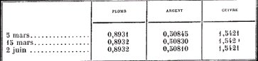
En dissolvant le cuivre dans l'acide nitrique et traitant par l'acide chlorhydrique, on ne constate pas la présence de l'argent, mais le disque de plomb, par coupellation, donne un boulon d'argent de 0,00003 g.
Il ressort de cette expérience que ce qui est généralement reconnu comme argent solide est, en partie du moins, une forme émigrante de la matière. Il semble aussi possible que l'or trouvé par le Prof. Roberts-Austen dans des cylindres de plomb qui étaient restés quelque temps appuyés sur des plaques d'or puisse avoir émigré de ces plaques et s'être répandu à l'intérieur de la colonne métallique. L'atmosphère semble être certainement le chemin de moindre résistance.
Nous usons du terme « matière émigrante », parce que les particules mobiles que nous envisageons sont (au même titre que généralement les odeurs) beaucoup plus près du quatrième état de la matière de Crookes que des gaz.STEPHEN-H. EMMENS et NEWTON-WW. EMMENS.
V. — Chiffres officiels relatifs aux cinq lingots déposés par l'Argentaurum Syndicale à la Monnaie des États-Unis, à New-York City.
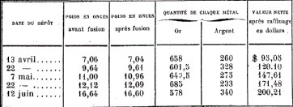
VI. — Extrait de la lettre écrite à M. Tiffereau, le 6 juillet 1897, par le Dr Emmens:
Je vous adresse sous pli séparé un exemplaire de mon Argentaurum
Papers n°1, ainsi qu'une petite brochure contenant la traduction de l'article paru dans la Nature du 5 juin et ma correspondance avec le professeur Crookes et M. de Parville. Vous verrez que, dans ma traduction de l'article de la Nature, j'ai corrigé les erreurs que vous avez si judicieusement relevées dans la critique que vous en avez faite.
Vous remarquerez, dans ma première lettre au Prof. Crookes, que je parle de l'acide nitrique modifié comme étant un des réactifs que j'emploie. Cela vous rappellera votre propre expérience et vous sera sans doute agréable, en vous montrant que vous avez pris la bonne voie. J'espère que les négociations dont vous me parlez dans votre lettre du 6 mai ont pratiquement abouti et que, vous aussi, vous arriverez bientôt à ce noble but de réveiller vos savants et vos hommes d'État français de leur dangereux sommeil.
J'ai déposé aujourd'hui mon sixième lingot d'Or Argentaurum au Bureau d'Essai des Etats-Unis. Il pesait 16,8 onces et sera probablement estimé 220 dollars.Stephen-H. Emmens
IV. August Strindberg et l'alchimie
C'est décidément une chose remarquable, que de voir des esprits puissants s'intéresser à ce qui paraît, pour beaucoup, comme une lubie ou une toquade. Des savants éminents du XIXe siècle se sont penchés sur l'alchimie et nous avons, dans l'ensemble, étudié leurs travaux : Eugène Chevreul, Marcelin Berthelot, Ferdinand Hoefer, Car-Gustav Jung et d'autres encore. On sait peut-être moins que l'alchimie fut un sujet qui passionna des artistes comme Claudio Monteverdi, Goethe, Edgard Varèse. Il faut encore citer le nom de l'écrivain suédois August Strindberg. Le cas de ce dramaturge est absolument fascinant : il s'est intéressé pratiquement à toutes les disciplines ainsi que l'a fait voir Sophie Grimal, dans un article paru dans la revue Europe [octobre 2000, pp. 164-177], intitulé : L'intuition du Tout et l'objectivité expérimentale. Qui était Strindberg ? Certainement, le plus grand auteur de Suède : les mythes l'ont entouré, l'alchimie l'a possédé à un moment de sa vie, vers 1890. Inferno, Le Plaidoyer d'un Fou, Drapeaux noirs sont les révélateurs d'un esprit déprimé, survolté, sans cesse en quête d'un ailleurs impossible. Martin Kylhammar écrit que :
« Dans la première moitié des années 1890, il s'agissait pour lui d'entreprendre une nouvelle carrière et de le faire dans les nouvelles arènes de l'époque, celles de la science et de la technique. La richesse de ses idées dans ces deux domaines ne le laissait pas en arrière de Suédois contemporains connus dans le monde entier comme le chimiste Berzelius ou l'inventeur Laval. » [Europe, Critique de la Civilisation, p. 16]
Sur Berzelius, cf. 1, 2, 3, 4, 5, 6, 7, 8, 9, 10, 11, 12, 13, 14. Jean-François Batail écrit :
« Au cours de la dernière décennie du XIXe siècle, on le voit prêt à renoncer à la littérature au profit de la recherche scientifique et technique. La chimie le sollicite particulièrement, ou plutôt l'alchimie qu'il tente de revivifier.» [Europe, De l'Exil au Prix Nobel du Peuple, p. 34]
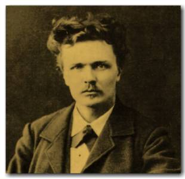
FIGURE II
(August Strindberg, en 1879)Et pourtant, il vient d'écrire en 1890 Au bord de la vaste mer, roman complexe, ambigu, admiré de Kafka : ce roman illustre un point clef dans cette période de la vie de Strindberg, le conflit entre l'hypercivilisé et le primitif. Est-il besoin de dire que ce conflit se retrouve dans les concepts qui sous-tendent les thèmes de l'alchimie ? Ce n'est pas tout. L'alchimie représente l'un des courants qui, selon nous, véhicule la conception du Sacré chez les Athées, en une sorte de panthéisme qui transcende littéralement tout formalisme religieux. Strindberg avait pressenti que les soi disant certitudes des savants du XIXe siècle n'étaient que des mirages ; voici ce qu'écrivait à cet égard Teilhard de Chardin :
« [...] si à l'intérieur d'un champ limité d'observation cette auréole subjective d'interprétation peut rester imperceptible, il est fatal que dans le cas d'une vision étendue au Tout elle devienne presque dominante. Comme il arrive aux méridiens à l'approche du pôle, Science, Philosophie et Religion convergent nécessairement au voisinage du Tout. » [Le Phénomène Humain, Paris, Seuil, 1955, in Sophie Grimal, Europe, l'Intuition du Tout et l'objectivité expérimentale]
Or, ce Tout présente bien des analogies avec celui que les alchimistes avaient en vue depuis des siècles, à vrai dire depuis la Chrysopée de Cléopâtre [cf. Chimie des Anciens, Berthelot] qui nous présente cette image du serpent Ouroboros, avec cette inscription : En To Pan. Sophie Grimal nous dit que l'intérêt de Strindberg s'était porté vers tous les domaines de la connaissance : sciences exactes, chimie, botanique, médecine, mathématique, astronomie, zoologie. Cet intérêt le conduisit à des comptes rendus, qui furent publiés dans la dernière décennie du XIXe siècle : on peut citer Antibarbarus [essai sur la chimie unitaire, 1894 : Antibarbarus oder die Welt für sich und die Welt für mich, Berlin, Verlag des biographischen Buraeus] ; puis à Paris où l'auteur s'était installé : Introduction à une chimie unitaire [Paris, Mercure de France, 1895] et Hortus Merlini ; Lettres sur la chimie ; Sylva sylvarum [Paris, Chacornac, 1897]. De là, nous dit Sophie Grimal :
« [...] il s'engagea dans le débat sur les corps simples qui divisait encore les esprits, s'intéressa à l'occultisme alors à la mode, et publia un grand nombre d'articles dans des journaux tels que La Science française et l(Hyperchimie - dont il fut, avec Jollivet-Castelot, un des pères fondateurs. » [idem, La pensée scientifique d'August Strindberg, p. 165].
Dans ses années d'exil, Strindberg emportait avec lui ses travaux en cours qu'il nommait le « sac vert ». De ce sac, apparaît notamment une sorte de testament spirituel, un ouvrage de 1115 pages intitulé Un livre bleu, contenant 650 pensées sur la science, la philosophie, les arts, la littérature, etc. Ce sac vert occupe 67 boîtes d'archives et il ne sera pas indifférent aux Amoureux de science d'apprendre que la boîte n° 15 contenait, entre autre, des notes sur les cathédrales et les Pyramides. Et que la boîte d'archives n° 22 contenait des notes sur la chimie ou le radium. Antibarbarus est consacré entièrement à la chimie et une partie de l'Hortus Merlini, avec d'autres notes sur la minéralogie. Notez que Strindberg partageait avec Marcelin Berthelot des doutes sur l'unicité de l'atome [n'oublions pas que Berthelot évoquait àla fin de son Origine de l'Alchimie le Mercure des vieux philosophes...]. Comme l'écrit encore Sophie Grimal :
« Parce qu'elle appartenait à un univers mental où la connaissance du réel se concevait comme un rituel ouvrant les portes de l'invisible, elle séduisait [l'alchimie] alors, et devait encore séduire longtemps, nombre de chercheurs [...]. » [Ibid.]
Mme Grimal a-t-elle une connaissance étendue de l'alchimie, voilà ce que nous aimerions savoir, car son propos semble relever davantage de la légende que de la science positive...Poursuivons :
« Fasciné par cette vision du monde et déchiré entre son désir de percer les mystères de la nature et sa peur de transgresser l'interdit religieux, Strindberg fut tout naturellement intéressé par la chimie hermétique. » [Ibid.]
Il faut noter qu'à cete époque, Strindberg noue des relations avec Justus Liebig, Jacob Berzelius et Friedrich Wöhler, qui avaient étudié la question de l'isomérie [nous en avons parlé avec l'affaire de l'Argentaurum, cf. supra]. il est d'autant plus curieux de voir que Strindberg distingue l'atome et la molécule, notion qui n'était pas encore évidente au XIXe siècle, alors qu'il commet l'erreur, comme on le verra, de confondre un poids atomique avec un poids moléculaire ! Ce qui le conduit à un non sens dans le développement qu'il va donner d'un sujet dont nous reparlerons, mais qui conduit à des développements, envisagés sous l'angle d'une véritable cabale chimique, tout simplement prodigieux. Quoi qu'il en soit, Strindberg, grand épistolier, va échanger de nombreux courriers dans les années 1890 avec des chimistes français comme Emile Gautier [ne s'agit-il pas plutôt d'Armand Gautier ?], Jean Riban, Marcelin Berthelot et...Jollivet-Castelot ainsi que Gérard Encausse, dit Papus [Strindberg Epistolier, Europe, Kerstin Dahlbäck, p. 198]. Les vues de Strindberg apparaissent contradictoires : il se fait l'apôtre d'une unicité de la matière dont les composés, les susbtances, apparaissent curieusement semblables et dissemblables. On pourrait presque y voir la prescience - s'il n'était des bornes infranchissables - au concept dual émis par la théorie quantique. Mais Strindberg ne semble pas avoir eu des vues de ce côté-là. Il avait intégré la notion corpusculaire de la matière et, en cela, se faisait néo platonicien. Ce faisant, les expériences de Strindberg étaent tour à tour guidées par des théories, certes modernes, mais où se ressentait un attrait irrésistible pour l'occulte, voire pour la théosophie dans ce qu'elle recèle de plus trivial. Sophie Grimal ajoute :
« [...] il étudie avec intérêt les différents aspects de la théorie atomique - antithèse absolue de la conception aristotélicienne de la matière si chère aux adeptes de la tradition hermétique. Les notions d'atome et de poids atomique font partie intégrante du discours scientifique des " Livres Bleus ". » [Ibid., p. 169]
E. Chevreul a toujours considéré que l'alchimie était impensable sans Platon ; il s'en est fait l'écho dans son Résumé de l'Histoire de la Matière et dans son Atlas des Connaissances humaines. La doctrine des quatre éléments de Platon conduit tout naturellement à l'idée de la transmutation et Platon cite le mot « transmutation » dans son dialogue le plus célèbre et qui était anciennement connu, contrairement à d'autres, le Timée. Par ailleurs, comme on vient de le dire, comment se fait-il que Strindberg ait confondu les poids moléculaires et les poids atomiques, alors qu'il savait bien faire la distinction entre atome et molécule ? Il y a là quelque chose qui échappe à la raison [cf. infra].
« Par exemple, dans la pensée intitulée " les formes d'atome dans les cristaux " ( " Atomformerna i kristallerna " ), il se demande s'il existe un rapport entre la forme des cristaux et celle des atomes qui les composent [...] » [Ibid.]
Cette pensée n'est pas nouvelle. Kepler avait imaginé tout un système sophistique là-dessus ; ce concept du rapport du cristal à l'atome trouva sa résurgence au XIXe siècle, chez Marc-Antoine Gaudin, dans son Architecture du monde des atomes dévoilant la structure des composés chimiques et leur cristallographie [Gauthier-Villars, 1873], cf. section Soufre. Inutile d'ajouter que là encore, tout vient des polyèdres de Platon. Sophie Grimal donne encore un extrait du 4èmeLivre Bleu où Strindberg tnete de concilier la notion de valence avec une mystérieuse loi des nombres, ce qui dénote une atitude pythagoricienne évidente, qui là encore s'incruste dans le monde des idées achimiques.
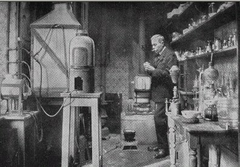
FIGURE III
(Jollivet-Castelot)Des expériences alchimiques de Strindberg, il nous reste sa correspondance avec Jollivet-Castelot, qui a paru, pour partie, dans l'opuscule Comment on devient alchimiste, traité d'Hermétisme et d'Art spagyrique basé sur les règles du Tarot [avec une préface de Papus, Chamuel, Paris, 1897]. Nous donnons d'abord le texte établi par jollivet-Castelot. Le texte entre crochet, caractère vert est de notre cru.
¯
2)- Théories et Travaux de M. Auguste Strindberg
Nous avons déjà présenté les travaux ainsi que la personnalité de M. Auguste Strindberg, d'une manière générale, dans notre ouvrage : « L'Hylozoïsme. —L'Alchimie. — Les Chimistes Unitaires. » Nous ne parlerons donc point ici de l'auteur des Lettres sur la Chimie (publiées en français dans la revue L'Hyperchimie), de l'Introduction à une Chimie Unitaire, et de Sylva Sylvarum. Que l'on veuille bien se rapporter pour ces détails à nos livres et à nos articles parus à l'Initiation, au Voile d'Isis et au Mercure de France. Ici nous présentons les théories et les travaux de M. Auguste Strindberg, extraits de la Correspondance qu'il a bien voulu nous adresser depuis plus de deux ans, et dont nous respectons le style plein d'originalité.
FABRICATION DE L'OR ET ETATS DES CORPS
Dans une de ses premières lettres, voici ce que le savant chimiste écrivait au sujet des métaux :
Exister pour une matière n'est qu'exister dans un moment donné, sous une température donnée, sous une pression donnée. Donc le plomb, poids atomique 207, peut très bien s'atténuer à 200 par la chaleur, de sorte que le plomb fondu soit du mercure = 200, et à une température encore plus haute 107 = argent.[on mesure déjà que Strindberg confond absolument les poids atomiques et moléculaires et qu'il semble n'avoir pas une idée de ce que représente un corps simple. Pour lui, les métaux se transmutent à des températures basses...]
Preuve : je fonds du plomb, y jette du Soufre et en un moment j'y vois du cinabre. Le creuset devenu froid, il y est sulfure de plomb. J'ai acheté du plomb ordinaire : je fonds et je verse le plomb fondu dans un acide nitrique bouillant. A l'analyse, je trouve des traces d'argent. Donc le plomb fondant étant argent, s'allie avec l'acide nitrique au moment donné. Je connais fort bien que tout plomb contient un peu d'argent et que presque tout l'argent est tiré du minerai de plomb ; mais je suis persuadé, que le plomb se transmue en argent et que l'on fait de l'argent chaque fois qu'on le tire du minerai de plomb. De même et pour faire de l'or. Vous savez que l'on a tiré tout son or du minerai sulfure de fer, avant que les mines d'Australie et Californie aient été découvertes. Je crois bien, puisque le poids atomique de l'or = 197, le poids moléculaire de Fe3S = 197.
Donc on a fait de l'or toujours !L'auteur a tant travaillé avec le fer et le soufre qu'il se sent capable de faire de l'or sans électricité ni haute pression, nous dit-il en réponse à la théorie émise par nous que l'on réussirait mieux avec le four électrique de Moissan. Et il montre les parentés des corps :
Or = 197.
Chromate de potassium = 197.
K2MnO4 = 197.Ä Recette : « Précipiter chromate de potasse avec sulfate de fer, et vous verrez un dépôt aussi ressemblant à celui de l'or. D'ailleurs une solution de sesquichlorure d'or ressemble à une solution de chromate de potasse. »
[voilà le point crucial, la pierre de touche de toute l'alchimie de Strindberg : la confusion entre les poids atomique et moléculaire le conduit à associer l'or à l'alun de chrome. Le plus fort est que l'alun de chrome - le chromate de potasse - est essentiel à la préparation du rubis, cf. 1, 2, 3, 4, 5, 7, 8, - Le hasard fait que le poids atomique de l'or - 197 - est égal au poids moléculaire de l'alun de chrome - 197. L'extraordinaire, là-dedans, est que Strindberg ne pouvait pas savoir que l'alun de chrome état nécessaire à la préparation du rubis. En revanche, certains propos de Fulcanelli - Mystère des Cathédrales et les deux tomes des Demeures Philosophales - sur l'or alchimique et son traitement peuvent être interprétés dans le sens d'une véritable cabale chimique, par le truchement de l'égalité des poids atomiques et moléculaires de deux corps ou deux substances n'ayant rien à voir l'une et l'autre. On pourrait penser que notre raisonnement est gratuit. Ce n'est pas si sûr. Si l'on relit soigneusement le traité de Jollivet-Castellot, on peut en tirer ceci :
« Sublimation et Fixation de la Matière. — L'eau mercurielle extraite du cinabre philosophique devient fluide, de volatile qu'elle était d'abord. Et le cœur de l'homme lui fut donné par l'influence du feu secret tiré du régime de Mars. Le principe métallique réside surtout dans les terres argileuses et l'alumine. Le manganèse est le [Soufre] des Ph[ilosophes]. »
On est en droit de se demander si Jollivet-Castelot ne donne pas là des indications remarquables sur l'un des trois principes de l'oeuvre : le SEL. On est d'autant plus en droit d'y penser que Jollivet-Castelot donne plus loin cet extrait du Traité du Sel de Clovis Hesteau, sieur de Nuysement :
« Ainsi le Sel est cette terre vierge qui encore n'a rien produit ; en laquelle l'Esprit du Monde se convertit premièrement par vitrification, c'est-à-dire par exténuation d'humeur. C'est lui qui donne forme à toutes choses et rien ne peut tomber au sens de la vue ni de l'attouchement que par le sel. Rien ne se coagule que le sel ; rien que le sel ne se congèle. C'est lui qui donne la dureté à l'or et à tous les métaux, au diamant et à toutes les pierres tant précieuses qu'autres par une puissante mais très secrète vertu vitrifiante. Qui plus est-il se voit que toutes les choses composées des quatre éléments retournent en Sel. »
Nous voilà édifiés : il est clair que le principe SEL ne peut être que le CORPS de la Pierre ; et que ce SEL est ce principe qui permet aux pierres précieuses d'acquérir leur dureté ]
Voilà indiquée déjà la méthode dont ne se départira point Strindberg et qu'on lui verra perfectionner sans cesse. Le point de départ, pour lui, de la fabrication de l'or, est le sulfate de fer et le chromate de potasse (qui jouent le rôle de mâle et femelle). Il recommande surtout le chalumeau pour les essais. [pour l'alchimiste, le sulfate de fer est le dragon babylonien et le chromate de potasse l'or alchimique]
« Là vous verrez comme les oxydes des métaux se transmuent à l'avenant de la chaleur décroissante. » (Lettre du 22 juillet 1894).
ÄNOTICES SUR L'OR. — « Similia similia appetunt ; similia similibus dissolventur. »
Cuivre sent l'acide nitrique, se dissout le mieux dans l'acide nitrique.
Cu = 63
HNO3 = 63
L'or se dissout dans l'eau régale.
Au = 197 (HCl x NO3)2 » = 197
L'or se dissout dans SO3K.
Au = 197
(SO3K) 2 =197
Anhydride azoteux : Az2O3 se produit par bioxyde d'arsenic et acide nitrique.
Az2O3 = 75
As = 75 Les radicaux alcooliques (CH3, C2H5) possèdent la faculté de se combiner avec les métaux et de manière que le métal ne se retrouve plus. Donc il est décomposé. Similia similibus dissolventur. Le radical d'un métal est alors CH3 ou C2H5.
Regardons cette série :
C2H5 F = 48 = Titane.
C2H5 Cl = 63 = Cuivre.
C2H5Br = 107 = Argent.
C2H5I +4Br = 197 = Or.
Autre série :
C2H5Nc = 52 = Chrome. CH3Nc = Calcium,
C2H5Ph = 57 = Nickel. C2H5NCS = Strontium.
C2H5S = 58 = Cobalt. C3H7NCSH2 = Baryum.
C2H5SH2 = 63 =Cuivre.
C2H5NO2 =76 = Arsenic.
Le sulfate de fer précipite l'or d'une solution de chlorure d'or. Voici ce qui se passe dans la liqueur :
Au Cl4H + 3 aq = 393 = 196 X 2.
FeSO4 + 7 aq =
Maintenant Fe se combine avec Cl2 + 4 aq.
FeCl2 + 4aq = 196.
Donc c'est le fer qui entre comme base dans le nouvel or qui se produit.
Tout l'or que l'on produisait autrefois s'extrayait des pyrites. [Nous sommes ici en plein délire ; il est proprement incroyable que Strindberg ait pu - raisonnablement - proférer une telle absurdité]
Fe3S = Au = 197.
Les pyrites qui se trouvent dans certains charbons de terre sont dorés parce qu'ils ne sont pas attaqués par l'air et l'eau comme les pyrites.
Expérience : J'ai exposé des houilles avec des pyrites mouillées, à l'air et au soleil pendant plusieurs jours sans qu'ils soient attaqués. Une goutte d'acide nitrique ne réagit pas ; une goutte de HCl non plus; mais de l'eau régale dissout et colore en jaune d'or de suite. Diluée avec de l'eau, la liqueur donne avec acide oxalique un précipité jaune qui se change en brun.
Le précipité doit être : FeCl2 + 4aq = Au. [Nous voilà revenus à un type de raisonnement qui n'avait déjà plus cours du temps de Geoffroy l'ainé]Une autre explication de la réaction de l'acide oxalique :
Acide oxalique = C2H4O2 + 2H2O = 126 = Iode.
Or = C2H5I + 1/2 Br.
perchlorure d'or = AuCl4 H + 3H2O = 196 x 2.
C2H4 de l'acide oxalique s'hydrate à C2H4
Cl4 se transforme en 1/2 Br et I...??
Une autre : .
C2H4O2 + 2H2O = 126
= 196 = Au = Or.
Cl2 = 70 = 196 = Au = Or.
Fait curieux, peut-être un hasard :
Sulfate de fer == FeSO4 + 7H2O ;
7H2O = 126 = acide oxaliqueAutre synthèse de l'or.
CrO3 = 100
197 = Or
CuO2H2 = 97
Expérience : Dans une éprouvette à froid au Soleil.
Filtrer. Mettre a/ cuivre poli ; b/ argent ; c/ fer ; d/ zinc ; e/ mercure, etc...
Précipiter avec a/ acide oxalique. b/ sulfate de fer.
Mettre en même temps ou avant, ou après du cuivre, etc...
Omnia in omnibus. Omne omne est. Similia similia appetunt ; similia similibus dissolventur. (Lettre du 6 juillet 95).Dès ici, M. Auguste Strindberg, en venant à la vieille théorie alchimique, fait s'unir le roi et la reine, le mâle et la femelle : cuivre et fer, dans le vitriol (acide).
Ä Méthodes pour l'or. « Le sulfate de fer précipite les sels d'or.
Expérience : Tremper une bande de papier en sulfate de fer ; puis la tenir au dessus du flacon d'ammoniaque ouvert, une minute au plus. Après, laisser la bande sécher dans la fumée d'un cigare, pendant 5 à 10 m. C'est tout. Le cigare dessèche et donne ammoniaque. Il empêche l'oxyde de fer hydraté de retourner à l'état de fer.
Voici ce qui se passe : Sulfate de fer ammoniacal : = Fe (AzH4) 2 (SO4) 2 + 6 aq = 392 = 196 x 2 = Or.
(Lettre du 16 avril 96).Nouvelle méthode améliorée :
Bain : Chromate de sodium.
Développeur : Sulfate de fer.
Acide oxalique.
Alcool (une goutte),
Fixateur : Ammoniaque.
Douce chaleur (pas presser).
Pour l'analyse, une circonstance curieuse se présente : l'échantillon ne se colore pas en bleu par le prussiate de potasse, si l'on ne recourt à HCl. Ce qui prouve que le fer est caché sous l'or. Une fois la coloration bleue parue, l'or est caché par le fer. Afin d'éloigner le fer et de garder l'or, on devrait traiter par acide sulfurique étendu ou par acide oxalique. » (Lettre du 20 avril 96).Nous ayons repris ces expériences, à la demande de M. A. Strindberg, et nous avons obtenu les intéressants résultats qu'il annonçait.
Ä « Une meilleure méthode : tremper les bandes de papier en acide oxalique et potasse (oxalate de potasse), qui dissout la rouille et laisse l'or intact, lorsqu'ils ont été préparés comme il a été indiqué précédemment. On décape les échantillons en chlorhydrate d'ammoniaque; on repêche les pellicules d'or sur la surface du chlorhydrate d'ammoniaque, après plusieurs décapages ; ces pellicules flottent comme une graisse. Toujours fumiger au-dessus de l'ammoniaque et de HCl, tout en desséchant à la fumée de cigarette » (Lettre du 27 avril 96).
Ä GENESE DE L'OR, d'après A. Strindberg. « L'or qui se trouve partout est formé partout, mais le plus fréquemment où le fer et le soufre prospèrent. Or le secret de la procédure semble consister dans l'interruption de la réaction, comme dans la photographie; et il me paraît maintenant que ce soit la pellicule formée de l'ammoniaque, plus la douce chaleur qui empêche l'air et l'humidité de continuer l'oxydation de l'oxyde de fer hydraté. Vous gardez votre croyance en la forte chaleur, mais la Nature n'indique pas ce facteur. Par exemple, les sables aurifères dans les fleuves sont formés par les pyrites des roches, seulement par l'action de l'eau et peut-être de l'ammoniaque. C'est pourquoi l'on trouve des sables aurifères près des grandes villes : Toulouse, Montpellier, Strasbourg, etc.
Maintenant pour les réactions :
1. Oxalate de potasse dissout le fer (sur le papier) et laisse les paillettes jaunes intactes si l'on a la précaution de ne pas laisser le fer entraîner les paillettes (au sujet des expériences précitées).
2. Ferrocyanure jaune, coloré d'abord en vert émeraude, ce qui est le caractère de l'or ; puis coloration bleue.
3. Acide Azotique, attaque ; mais le papier est blanchi au chlore.
4. HCl ; attaque ; parce que HCl dégage Cl ; etc.
Voici une autre recette :
Un seau de zinc (qui précipite l'or métallique).
Y verser pêle-mêle : sulfate de fer : CuO2H2 (hydrate cuivrique) CrO3 — Kcy ; sulfure de potassium ; chlorure stanneux ; sulfate de cuivre, un sel de plomb, de mercure et d'argent ; chlorhydrate d'ammoniaque; ammoniaque; remuer avec un bâton de zinc. Laisser reposer après addition d'eau ammoniacale. Puis écumer les paillettes abondantes et les traiter comme d'habitude sur des bandes de papier à chaleur douce, les fumigeant alternativement avec HCl et AzH3, et à la fin avec SO2 (au-dessus d'une allumette soufrée).
Puis examiner le seau de zinc, s'il y a des dépôts d'or, et sur le bâton ou l'écumoire. Il faut de la patience, et tout essai d'augmenter le rendement a mal réussi.
En attendant le moment des creusets, je recommande la voie humide et les bandes de papier. Après 300 essais, je suis revenu au sulfate de fer , avec AzH3 et HCl x SO2, comme la meilleure des méthodes. » (Lettre du 4 mai 1896).Ä « La dernière et la plus simple ainsi que la plus sûre des méthodes : dans un verre à eau, verser une solution de sulfate de fer et hydro-chlorate d'ammoniaque. Ajouter un peu d'ammoniaque ; remuer et laisser reposer quelques heures ou une nuit entière. Alors il s'est formé des taches grasses sur la surface, ou une pellicule. Verser une goutte d'éther, et repêcher sur papier. Tremper les papiers en mercure qui dissout l'or et laisse le fer. Si la pellicule est trop forte et brune, verser le tout dans un verre plus grand et diluer avec de l'eau. Laisser reposer quelques heures. Les taches grasses se présentent, quand elles sont mûres, en belle couleur jaune d'or métallique sur le papier.
Vous pouvez dorer avec votre amalgame. Si vous voulez déterminer le rendement : pesez le mercure avant et après l'opération. Si vous voulez isoler l'or, chauffez l'amalgame dans un matras.
En ajoutant un sel de cuivre, le résultat devient meilleur. »
« Sur le couvercle nickelé et brillant de mon encrier, j'ai mis une goutte de chromate de sodium, puis une goutte de sulfate de fer, puis j'ai fumigé avec le bouchon du flacon d'ammoniaque. Quand la pellicule s'est formée, j'ai laissé en repos au soleil jusqu'à siccité complète. En frottant avec du papier, le couvercle se montre d'une dorure mate. Pour brunir l'or, les doreurs se servent d'une « dent de loup. » — Comme fixateur décisif, je recommande le mercure, rien que le mercure qui dispense de la chaleur et du reste. Voilà la bonne voie. » (Lettre du 14 mai 1896).Ä « L'or mussif est un mauvais or en voie de formation. [l'or mussif est tout simplement du sulfure stannique dont l'éclat rappelle celui de l'or. Magophon, alias Pierre Dujols, évoque l'or mussif dans son Hypotypose, mais il en parle en terme de cabale pour le désigner comme de l'or alchimique immur.]
SnS2 = 182 ; SnS2Az = 196.
Appliquer un azotate à l'or mussif. Comment ? Cyanure de potassium ! — Ou réduire un sel d'étain avec sulfocyanure de potassium. — Plomb et étain comme point de départ.
L'iodure de plomb cristallisé d'une solution chaude ressemble beaucoup, à l'or.
Le zinc avec le cinabre doit produire un sulfure de zinc (l'or « accompagne » le sulfure de zinc). Essai : Chlorure de zinc, cinabre et cyanure de potassium. Refroidir sous une couche de cyanure de potassium.
Refroidir un plomb 206 à or — 196 (197). Reste 10 ou 9 (9 = 1/2 H2O).
Oxyde de plomb massicot ressemble déjà à des paillettes d'or. Il faut essayer de marteler du plomb avec massicot ; fondre et ajouter massicot. Marteler et ainsi de suite » (Juin 1896).Ä « Recette : Verser dans un baquet de l'eau, du sulfate de fer, un peu de sulfate de cuivre et du chlorhydrate d'ammoniaque. Ceci le soir, et mettre le baquet dans le jardin. Le lendemain matin, repêcher la graisse métallique qui surnage. C'est un bon or et beau. En renouvelant l'ammoniaque, on pêche une semaine » (Lettre de juillet 1896).
Enfin, nous reproduisons l'étude sur la SYNTHESE D'OR, qu'Auguste Strindberg, écrivit en novembre 1896 pour notre revue : L'Hyperchimie, et où il condensa toutes ses expériences. Nos lecteurs auront ainsi une vue absolument complète des beaux travaux entrepris par le chercheur suédois sur la transmutation qu'il a réalisée sur une petite échelle.
Certes il améliorera encore beaucoup sa méthode et arrivera à réaliser une Synthèse presque parfaite. Nous fûmes frappé, lorsque nous eûmes le grand plaisir de causer longuement avec Strindberg, à Paris, de la rare logique avec laquelle il nous développa ses essais et ses projets. Une ardente conviction se dégage de ce profond savant, illuminant ses yeux bleus, pâles, rêveurs, très sympathiques. D'une parole lente, aux accents tout Scandinaves, il nous exposa ses combats acharnés, ses luttes contre la science routinière et persécutrice ; et nous nous plûmes à admirer le désintéressement superbe d'Auguste Strindberg, digne de celui des vrais alchimistes qui ne poursuivent que la Vérité; la douceur, l'invincible persévérance, se lisaient en ses regards magnifiques ainsi que sur le front large, où la flamme du génie brille d'un vif éclat.[il n'y a, dans la relation qui suit, hélas rien à repêcher et les expériences conduites par August Strindberg relèvent de la pure chimère. On y décèle point de cabale non plus ; Strindberg semble avoir été, en quelque sorte, un « électron libre » qui concluait absolument n'importe quoi de ses expériences.]
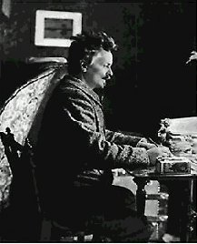
FIGURE IV
(August Strindberg)Sulfate de fer ammoniacal
Fe (AzH4)2 (SO4 )2 6 aq = 392.
La molécule de l'or = Au2 = 392. Peut-être la solution de l'énigme :POINT DE DÉPART
Sulfate de fer (couperose verte) précipite les solutions d'or. Précipiter veut dire, d'après la chimie moniste, entrer comme facteur dans la reconstitution d'un corps de composé.EXPÉRIENCE FONDAMENTALE
On trempe une bande de papier dans une solution de sulfate de fer : fumige au-dessus du flacon d'ammoniaque. Ce papier se colore en bleu-vert comme le protoxyde d'or. On fait sécher au-dessus du cigare allumé, et le papier se colore en brun marron comme le deutoxyde d'or. Mais peu à peu des paillettes jaunes d'or métalliques se forment, constituant un or non fixé, lorsque le sulfate de fer produit une autofécondation en se précipitant soi-même.
Cependant, les paillettes jaunes s'amalgament avec k mercure. Donc ce n'est plus du fer au moins, puisque le fer ne s'amalgame point avec le mercure.
Toutefois les bandes de papier se colorent en bleu avec le ferrocyanure jaune, ce qui indique la présence du fer, mais en même temps de l'or puisque le ferrocyanure jaune produit du Bleu de Prusse avec certains sels d'or.
Essayons d'expliquer ce qui se passe dans l'expérience fondamentale.
1° Ou il se forme un sulfure de fer hypothétique et inconnu Fe3S = 196 = Au = 196.
Ce qui n'est pas probable, lorsque les paillettes jaunes ne donnent pas hydrogène sulfuré avec les acides, comme les pyrites le font. Ce qui pourrait être le cas, puisque l'or accompagne les pyrites.
2° Ou il se constitue un hydrate d'oxyde de fer inconnu, Fe2O3 + 2H2O = 196 = Au = 196. Ce qui pourrait être vraisemblable lorsque les sables aurifères sont toujours ferrugineux.
3° Ou il se forme un sulfate de fer ammoniacal :
Fe (azH4)2(S04) 2 6H2O = 392 ; Le nombre 392 indique justement le poids moléculaire du chlorure d'or = 392, ce qui laisse à penser, et le chlorure d'or est réduit par la nicotine (du cigare) réducteur de sels d'or.
Ce qui rend cette dernière réaction probable ? Un fait puisé dans la vieille chimie.
Orfila dit, Tritosulfate de fer ammoniacal se produit en dissolvant de l'or (?) dans le chlorhydrate d'ammoniaque et l'acide azotique et en précipitant par le sulfate de fer.
Recourir à. une solution d'or afin de produire une simple combinaison du fer indique une relation intime entre la constitution de l'or et du fer.
Enfin cet or non fixé et incomplet se dissout en acide azotique seul et en acide chlorhydrique, propriété toutefois commune avec l'or extrêmement atténué.EXPÉRIENCE II
L'autofécondation du fer a donné une mauvaise progéniture et il faut croiser ce métal avec un autre qui possède les propriétés plus accentuées de l'or.
Le cuivre, appartenant au second groupe des métaux, différent du premier ou celui du fer par plusieurs qualités, paraît déjà par la nature être désigné comme la femelle lorsque les chalcopyrites, sulfures de fer et de cuivre combinés produisent un or plus parfait que les sulfures de fer simples.
Une bande de papier est trempée en chlorure cuivreux Cu2Cl2 puis trempée en sulfate de fer et fumigée sur l'ammoniaque et le cigare.
Cet or est plus résistant, plus éclatant.
La réaction pourrait s'expliquer comme suit :
Cu2Cl2 = 196 = Au = 196.
Comment produit-on ce chlorure cuivreux ? En précipitant le sulfate de cuivre avec le chlorure d'étain.
Mais le chlorure d'étain précipite l'or de ses solutions. Donc le sulfate de cuivre paraît être doué de la possibilité de former un or.
Cette Synthèse d'or est constatée et vérifiée pour la procédure dite de Falun, appliquée à l'extraction de l'or des chalcopyrites ou sulfures de fer et de cuivre combinés.
Il existe en Suède deux mines de cuivre où l'on a toujours extrait l'or : Falun et Adelfors.
La procédure dans la forme la plus simple est celle-ci, correspondant exactement à la Synthèse ci-dessus pratiquée.
Les chalcopyrites sont grillés avec du chlorure de Sodium, il se forme chlorure de fer le Cl24N2O = 196 = Au : ou Cu2Cl2 = 196.
Les minerais sont traités avec chlorure de calcium et acide sulfurique (ou chlorhydrique), par où ils deviennent chlorurés.
Puis et à la fin on précipite par le sulfate de fer. C'est tout, et juste l'opération ci-mentionnée.EXPÉRIENCE III POUR LE RENDEMENT EN GROS, MÉTHODE SIMPLIFIÉE
Dans un baquet je verse 1 sulfate de cuivre, 3 sulfate de fer, 1 chlorhydrate d'ammoniaque et de l'ammoniaque à discrétion. Puis je remplis le baquet avec de l'eau et laisse reposer au soleil ou devant un feu.
Sur la surface de l'eau des taches grasses font apparition après quelques heures ou mieux après un jour d'attente. On repêche les taches grasses sur du papier et laisse sécher tout doucement. En ajoutant de l'ammoniaque, la production continue pendant des semaines.Les mines d'or seront-elles superflues et vaudra-t-il mieux opérer dans les fabriques ou usines ? Question industrielle qui ne nous intéresse pas.
Cependant en écrivant ceci, je lis dans un journal qu'un monsieur Stephen, minéralogue à New-York, vient de faire transmuter l'argent en or. [cf. supra pour les expériences de Stephen]
Qu'a-t-il fait ? Le télégraphe en garde le silence, mais je me rappelle mal un fait trouvé l'hiver passé dans « L'allotropie des corps simples » par Daniel Berthelot.
« Tartrate (?) d'argent précipité par tartrate de fer donne un argent métallique jaune. »
II se peut que je me trompe sur les détails, privé de mes livres, et je renvoie le lecteur ami à l'ouvrage cité.
Argent jaune, c'est l'or, et comme le Platine est l'or blanc, peut-être ! cela vaudrait bien la peine d'analyser l'argent jaune de M. Berthelot, en tous cas.AUGUSTE STRINBERG.
15 Septembre 1896.sites internets sur Strindberg et l'alchimie :
- http://www.levity.com/alchemy/wishlist.html
- http://www.bedfordstmartins.com/litlinks/drama/strindberg.htm
- http://www.salem.mass.edu/sextant/v4n1/hillyer.html
- http://www.extrapris.com/bio2.html
- http://weeklywire.com/ww/04-05-99/tw_review2.html
- http://www.strindbergsmuseet.se/english/works/letters.html
V. Clovis Hesteau de Nuisement
CLOVIS HESTEAU, POÈTE ALCHIMISTE, RECEVEUR GÉNÉRAL DU COMTÉ DE LIGNY, ET L'HÔTEL DES FERMES A LIGNY-EN-BARROIS. - FOURIER DE BACOURT. [Journal de la Société d'archéologie et du Comité du Musée lorrain -- puis de la Société d'archéologie lorraine et du Musée historique lorrain, livraison de 1899 - 10 - 48e année]
[Nous avons à plusieurs reprises évoqué Clovis Hesteau de Nuysement, notamment lors du commentaire du Traité du Sel de Michel Sendivogius, compilé probablement sur des notes laissées à sa mort par le 1er Cosmopolite, le grand Alexandre Sethon.]
Dans son état présent, l'hôtel qui a retenu le nom d'Ancien hôtel des Fermes, à Ligny-en-Barrois, ne donne qu'une très vague idée de sa splendeur passée : les bâtiments et les jardins d'autrefois ont été en grande partie détruits, morcelés, aliénés, et, sur leur emplacement, des constructions nouvelles se sont élevées. Pour se rendre compte de
l'architecture primitive, il faut pénétrer dans la cour intérieure dont nous reproduisons les deux aspects principaux. Le nom d'Hôtel des Fermes donné à cette habitation est moderne, et jusqu'à la vente de 1769 il ne prévalut guère sur celui plus ancien et plus exact d'hôtel Nuisement. Peut-être les Nuisement ne le firent-ils poin bâtir (Le chevalier de la Morre, dont la fille et les petits-enfants furent pendant plus de soixante-dix ans propriétaires de cet hôtel, leur a répété bien des fois que, sous la Régence, on le désignait aussi Maison Quevonge, sans doute en souvenir du long séjour qu'y fit Antoine de Stainville Couvonges après son mariage avec Bonne de Montpezat (1598). Est-il indifférent de noter que c'est dans les dépendances de l'hôtel qu'a été trouvée, en 1884, la table d'horloge solaire gravée par Hanzelet et sur laquelle sont gravés les portraits d'Antoine de Couvonges et de sa première femme ? (L. Germain, Mém. de la Soc. d'archéologie lorraine, 1892, p. 394-411.) ), mais leur possession date déjà des dernières années du XVIe siècle, et c'est là que git pour nous l'intérêt de cette appellation puisque le premier Nuisement qui s'y installa n'est autre que le poète alchimiste Clovis Hesteau. Rien de précis n'a paru jusqu'ici sur ce
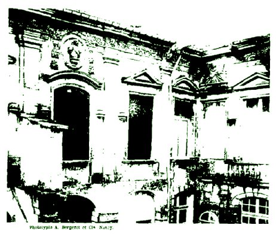
FIGURE V
(Hôtel des Fermes, Ligny-En-Barrois)
personnage. Les auteurs ne sont même pas d'accord sur son identité. Les détails qui suivent ont donc leur importance. Pour connaître le lieu où naquit Clovis Hesteau, il eût suffi de consulter ses œuvres poétiques, éditées en 1578, dans lesquelles il se dit Enfant de Blois. Dorat, le Pindare français, lui fit connaître non seulement les poètes grecs et latins, mais aussi ceux des Italiens et des Français qui avaient eu le plus de renom ; il fit mieux encore en attachant son disciple au service du duc d'Anjou. Ce prince procura à Hesteau le poste de secrétaire de Monsieur, et celui de secrétaire de la Chambre du Roi quand Monsieur monta sur le trône sous le nom d'Henri III. La faveur de Dorat, que Charles IX avait créé « poète royal », valut à Hesteau l'amitié des beaux esprits de ce temps-là. Du Perron, « professeur royal », Balzac, Rivasson, Nicolas Goulu, Jean de Boissières, La Jessée qui furent ses collègues ou ses amis, publiaient hautement ses louanges. Son bagage littéraire était pourtant bien médiocre et le recueil poétique en trois livres qu'il fit paraître sous le patronage de Monsieur n'aurait pas sauvé son nom de l'oubli (Tome 1, Stances, hymnes, odes. Tome II, Amours (101 sonnets). Tome III, Divers poèmes (satires, épigrammes, chant pastoral, etc.).). Mais déjà d'autres travaux le sollicitaient. François Monseigneur, le célèbre alchimiste, de la maison de Candale, produit à la Cour par le duc d'Alençon, avait entièrement séduit Hesteau par ses théories non moins que Passerolle et van Ghell par leurs expériences ; n'avait-il pas vu chez ce dernier
Avec un grain de poudre
Douze gros d'argent vif sang fraude en or mués ? (Poème philosophic, etc. Introduction, vers 5 et 6.)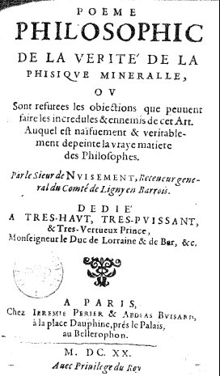
Il était très jeune alors. La protection de son prince lui permit de « courir et de Lattre avec ardeur le prix proposé par le trois fois « grand Mercure » sous l'égide des Chassemal, des Libarius, des Lulle, et plus tard de l'Ecossais Napire dont la réputation devait le décider à fairele voyage de Londres » (Le valeureux et docte Alexandre Napire, Chevallier du Grand Roy, Baron de Marquiston.). Il se trouvait avec le duc d'Alençon en Belgique quand celui-ci fut surpris par la mort (1584). Privé de son meilleur appui, presque ruiné par ses folles expériences, Hesteau demeura néanmoins à Paris tant que vécut Henri III ; mais, à l'avènement de Henri de Navarre, fatigué des intrigues de cour et des fluctuations de la politique, suspect d'ailleurs au nouveau souverain, il songea à se créer loin de la capitale une position sérieuse, tranquille et rémunératrice. En conséquence, il s'adressa à l'ami fidèle du feu duc d'Anjou, François de Luxembourg, premier duc de Piney et comte de Ligny-en-Barrois. Le receveur général du Comté, Gérard Collesson, venait de mourir (1591), Hesteau lui succéda (Ce Gérard Collesson, fils d'un autre Gérard attaché à la personne de Marguerite de Savoie, avait épousé le 5 juillet 1580 Claude Broussey, fille de feu Jacques Broussey, de Nant le-Grand. Étal civil de Ligny.). De 1591 à 1623, date à partir de laquelle nous perdons trace de son existence, Clovis Hesteau de Nuisement mena à Ligny une existence assez agitée. Ses fonctions administratives ne l'empêchèrent pas de satisfaire ses goûts littéraires ; c'est à cette époque qu'il publia une traduction du
Traité de la Constance, par Juste Lipse. Sa passion pour les expériences chimiques se réveillait, elle le domina bientôt tout à fait. Grâce à lui, la mode vint de ces expériences
auxquelles la protection du duc de Lorraine donna une impulsion incroyable. L'historien qui raconterait cet épisode de l'histoire de l'alchimie en Lorraine intéresserait plus d'un lecteur (Tous les matériaux de cette histoire sont aux Archives de Meurthe-et-Moselle B. 1328, B. 4965, 4967, B. 4970 à 4975. B- 87. B. 4983. B. 4990. Le procès des alchimistes est B. 5043.). Pendant plusieurs années, à la faveur de bonnes cures médicales, l'engouement ne se ralentit pas, et c'est sans surprise que nous voyons, au nombre des collaborateurs dé Clovis dans le grand œuvre, François de Riguet, La Roche-Brinel, Oryot gruyer de Bar, M. de Pullenoy et le jeune Antoine de Couvonges (II devint gouverneur du duché de Bar. De sa première femme Bonne de Montpezat, il eut Charles, doyen de la Primatiale de Nancy, Antoine, baron puis comte de Couvonges tué à Lérida. De sa seconde femme, Eve de Pulnoy, veuve du m" Théodore de Haraucourt, il eut Charles-François, dernier comte de Stainville-Couvonges.). Les alchimistes logés et entretenus par le duc de Lorraine dans le château de Condé (Custines) demeuraient en faveur malgré les procès retentissants. Quand ils tombèrent, Hesteau tomba avec eux : du moins son nom ne parait plus dans nos actes publics, mais il resta sur les livres de philosophie hermétique imprimés sous le patronage du duc Henri, qui en fournit le papier (Papier de la papeterie de Condé (Custines) délivré à Clovis Nuisement, 1620. — Archives de Meurthe-et-Moselle, B, 4988.). Ces deux livres devenus très rares sont intitulés :
Poème philosophic \ de la Vérité de la \ Physique minéralle \ où sont réfutées les objections que peuvent faire \ les incrédules et ennemis de cet art \ auquel est naifvement et véritable \ ment dépeinte la vraye matière des Philosophes, par le sieur de Nuisement receveur général du comté de Ligny-en-Barrois, etc. (Dédié | à très haut très puissant | et très vertueux Prince | Monseigneur le duc de Lorraine et de Bar, etc. | à Paris, chez Jérémie Périer et Abdias Buisard | à la place Dauphine près le Palais | au Bellérophon | MDCXX | avec privilège du Roy.).
Traittez: de \ l'harmonie \ et constitution \ généralle du vray sel \ secret des philosophes et de l'Esprit \ universel du monde suivant le trois \ iesme principe du cosmopolite \ oeuvre non moins curieux \ que profitable tant de la cognoissance \ de la vraye médecine chimique \ recueilly par le sieur de Nuisement \ receveur général du comté de \ Ligny-en-Barrois (A Paris chez Jérémie Périer et Abdias Buisard tenant leur boutique à la Cour | du Palais vers les horlogers | M. DC. XXI ] avec privilège du Roy.).
Ces deux livres ont été réimprimés à La Haye en 1639 avec un Traitté du Soulphre, second principe de Nature; en 1640 parut une édition des Oeuvres de la phisique naturelle contenent les trois principes des Philosophes (Papiers Servais. Bibliothèque de Bar-le-Duc.). Ces publications firent croire à Villeterque qu'après la mort du duc Henri, son protecteur (1624), Clovis Hesteau se réfugia à l'étranger pour y continuer plus librement et sur une plus vaste échelle ses expériences.
« (François) (erreur de prénom) Hestaux praticien, charlatan, littérateur, philosophe, médecin, financier, n'etoit pas né à Ligni et n'y mourut pas, mais chez les Holendois auxquels il avoit été demander la liberté de pratiquer sans craindre d'être pendu le culte de Mercure dont Paracelse, Villeneuve et Bacon furent les apostres fervens. » (Liste des habitants de Ligni qui ont acquis la célébrité.)
La vérité est que Villeterque ignorait, comme nous l'ignorons encore nous-mème, où et quand mourut Nuisement. Si les registres de l'état civil de Ligny pour les décès de cette époque n'étaient détruits, nous y trouverions très probablement la trace de celui de Clovis dans cette ville en l'an 1622 ou 1623, car, dès l'année 1623, son fils est dénommé receveur général du comte, fonction qui demeura héréditaire dans la famille. Clovis Hesteau professait le catholicisme (son dévouement à la Ligue et maints passages de ses livres en témoignent); et, bien qu'elle lût singulièrement mélangée de paganisme, sa religion était, en somme, celle d'un grand nombre de littérateurs et de seigneurs catholiques de son temps. Mais on confondait alors dans une même réprobation d'imposture les alchimistes et les sorciers. De nos jours, n'y a-t-il pas encore tendance à prendre alchimie pour magie ? On conçoit donc que notre alchimiste, si impopulaire par ailleurs, ait été honni par ses contemporains (« .... Ceux qui adhèrent aux magies, sorcelleries, transmuacions, et infestacions diaboliques pour néant sont chresticns... » Ordonnance de Fr. Vaultier, mayeur de Ligny, 1625) ; néanmoins l'épithète de charlatan que lui décerne Villeterque étonne de la part de cet homme de si grand esprit. Non, les alchimistes ne furent pas des charlatans : sans doute, ils eurent le tort pour la postérité de poursuivre deux utopies particulièrement chères à l'humanité : la transmutation des métaux en or et la panacée universelle, mais de leurs expériences devait naître, à défaut de la pierre philosophale, toute une série de corps intéressants. De leurs cornues est sortie la chimie moderne, science aux ressources multiples et aux applications infinies. Dans ce grand travail préliminaire, quelle fut la part de Nuisement ? L'historien de la philosophie hermétique la réduit à rien (Histoire de la philosophie hermétique par l'abbé Lenglet (1742), tomes I, 393, et III, 249.). Sans doute l'alchimiste linéen fait quelque part un aveu bien suggestif :
Et quand mon souvenir mes erreurs me tesmoigne
Je pallis de tristesse et rougis de vergoigne (Poème philosophic, p. 52)-
Mais un fait s'impose, indéniable. Les travaux de Clovis l'amenèrent à tenter des cures médicales qui eurent un grand succès. « Grâce à des sueurs universelles et naturelles », il obtint dans certaines maladies graves des effets si miraculeux que, dit-il, « je ne l'oserois publier sans craindre le tiltre de charlatan. » Ces cures heureuses portèrent sa réputation jusqu'à la Cour. Le duc de Lorraine vint à Ligny ; une « information solennelle » fut faite en sa présence. La « multitude » des dispositions favorables convainquit le Souverain, et lorsque son frère, le cardinal de Lorraine, fut atteint de la maladie dont il devait mourir, Hesteau fut appelé. Une cabale des médecins le força à s'éloigner sans avoir rien fait (Traittez du Sel, p. 96 et 97.). D'où vient donc l'impopularité persistante qui s'est attachée à la mémoire de Nuisement malgré les incontestables services qu'il rendit à la population soutirante ? Sans doute, cet homme, étranger au pays, fut un administrateur détestable, souvent déféré à la justice par les ducs François et Henri de Luxembourg ; sans doute sa rigueur contre les contribuables justifie les récriminations de ses contemporains, indisposés déjà par les mystérieux travaux auxquels il se livrait constamment, soit dans son hôtel de Ligny, soit dans le pavillon isolé de la Grange-aux-Champs (V. notre article Les Mayeurs jaunes, dans les Mémoires de la Société des Lettres de Bar pour 1894, p. 216 et suiv.). Mais cette unanimité dans la haine, sans aucun souvenir des bienfaits reçus, étonne à bon droit. Ne peut-on admettre qu'elle fut provoquée et soigneusement entretenue par le corps médical, les Purgons patentés de ce temps-là ?
Nulla Invidia nisi medicorum
a dit Horace. En suite de la note que nous avons citée plus haut, Villeterque écrit :
« Se garder de confondre Hestaux receveur de Ligni et Hestaux l'un des poètes amoureux de la Cour de Valois. »
Villeterque se trompe. Il s'agit d'un même personnage. Le premier tome des Oeuvres poétiques de Clovis Hesteau publiées en 1578 contient une Ode Pindarique à Monsieur sur ses victoires. Or, dans le Traittez du Sel, publié en 1621, l'auteur, qui habitait Ligny-en-Barrois, dit expressément...
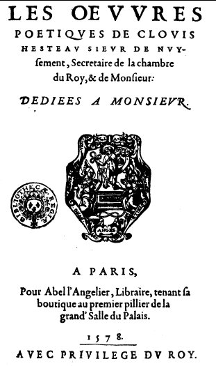
ce qu'autrefois j'ay despeint, en l'Ode pindarique dédiée au grand duc d'Alençon mon très-honoré seigneur et maistre, de de laquelle je rapporleray ici quelques vers à ce propos :
L'esprit porte sur la face
De ceste indigeste masse, etc.
(Traittez du Sel, p. 162 et 163. Dans le Poème philosophic, p. 26:
Car toute médecine excellente et louable
Doit estre un sel fusible, ou chose au sel semblable.).
Cette seule citation est concluante. Les actes du temps nous fourniraient d'autres témoignages : nous n'en extrairons que les documents nécessaires à la généalogie de notre alchimiste.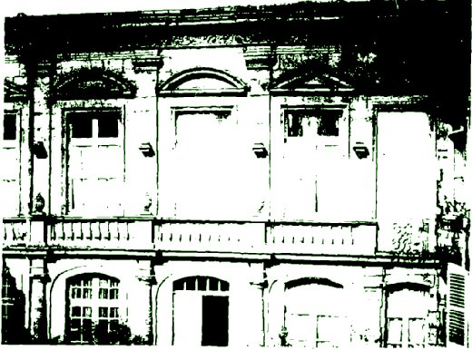
FIGURE VI
(Hôtel des Fermes, Ligny-En-Barrois)
I. CLOVIS HESTEAU, sr de Nuisement, avait épousé Marie Nitard, soeur de Sibille Nitard, mariée à Nicolas Leschicault, orfèvre a Bar. Il est question d'eux pour la première fois dans les registres de l'état-civil de Ligny le 2 février 1592. Leurs enfants connus furent: Henry, Madeleine et César, morts jeunes ; Lucrèce, religieuse annonciade à Saint-Mihiel ; Anne mariée à Antoine Dandelin, sr de Baudinet, et Louis.
II. Louis HESTEAU, né à Ligny en-Barrois en 1594 succéda à son père comme receveur général du Comté (Le manuscrit Boucher (Biblioth. de Bar-le-Duc) fait ici une confusion.). Il épousa Marie Husson, fille de Jean et d'Isabeau Gombert de Vaincourt, dont il eut, Marguerite, épouse de noble Antoine Morison, avocat à Bar-le-Duc, Marie-Anne, mariée à Jean de Laroche-Cousseau, capitaine d'infanterie au régiment du maréchal de la Ferté, déclaré gentilhomme le 18 novembre 1667 (Liste chronol. des gentilsh. de Lorraine. — Lepage et Germain, p. 342, n° 2101. — Originaire de l'Agénois, il demeurait à Marson), Charles, marié à Marguerite de Corail, fille d'un gouverneur de Ligny, et Jacques.
III. JACQUES HESTEAU, receveur général du comté de Ligny en 1658 (Archives municipales de Ligny-en-Barrois), épousa Louise Morison, sa cousine, dont il eut au moins onze enfants (En secondes noces (1663), il épousa Louise Léger, veuve de noble François Cuny. Elle mourut en l581.). Citons seulement Charlotte-Henriette (1646-1734), mariée a Gaspard Lescamoussier, auditeur des Comptes de Bar, et Antoine, qui suit.
IV. ANTOINE HESTEAU (1647-1710), fut lieutenant particulier en la Prévôté de Ligny et marié en 1675 à Anne-Madeleine Petit, ou Le Petit, des seigneurs de Vaux-la-Petite, dont il eut dix enfants (II est souvent question de lui dans la correspondance du célèbre prévôt et maire de Bar, Antoine Morel. — Archives de Vitry-la-Ville.).
V. Louis HESTEAU, l'aîné (1675 1734), lieutenant particulier comme son père, épousa Marie-Françoise Lescaille et fut prévôt de Saulx, seigneur d'Oey en partie, et maire de
Ligny. Son frère cadet, Charles-François-Henry (1679-1747), fut chanoine de la Collégiale. Leur sœur Marguerite-Charlotte, née en 1678, se maria le 7 décembre 1709 avec Jacques de Langres, devenu plus tard directeur général des Fermes du comté de Ligny.
Et voilà comment la maison des Nuisement prit la dénomination d'Hôtel des Fermes. Après Jacques de Langres, cette belle demeure passa au gendre de celui-ci: Pierre-Charles Remy de Cournon, qui la vendit en 1769 à Jean Brigeat de Lambert, dernier fermier général (De son fils Jean-Baptiste Brigeat de Morlaincourt, marié à Gabrielle de la Morre, l'bôtel échut par partage de famille à Mme de Saint-Balmont. En 1860, il fut vendu a M. Nocas, puis à M. Estienne-Zeller, propriétaire actuel.). Modèle ou copie des riches hôtels barrisiens bâtis au temps des architectes Gratas, l'hôtel Nuisement a passé longtemps pour être hanté et porter malheur à ses hôtes, à ceux-là surtout qui y naissaient. L'originalité et la richesse de son architecture, unique dans Ligny, la mauvaise réputation de Clovis Hesteau à qui la tradition en attribue la construction, les expériences fantastiques auxquelles il s'y livra, l'incendie qui, dans une nuit de décembre, dévora le principal corps de logis et quatre maisons attenantes (1638), les scènes tragiques qui s'y succédèrent plusieurs fois en deux siècles, la mort émouvante du fermier général J. de Langres (1730) et du dernier Hesteau (1754), celle non moins triste du dernier Brigeat de Lambert (1800) (M. de Langres, dans un accès de fièvre chaude, se jeta par la fenêtre de sa chambre et se brisa sur le pavé. M. de Hesteau fut trouvé dans sa remise écrasé sous un éboulis de fagots. Hyacinthe Brigeat de Morlaincourt, petit-fils unique du fermier général, enseigne de vaisseau, tomba à la mer en rade de Cherbourg et s'y noya ; il avait vingt ans.), l'impopularité qui, de tout temps, s'est attachée aux traitants et à leur trop rapide fortune, voilà bien plus qu'il ne fallait pour faire naître la légende noire et la rendre vivace jusqu'à nous dans l'imagination populaire.